Capítulo 2 Análisis exploratorio de datos
Este capítulo tiene el EDA completo en R. Después de cada tabla o gráfico hay un recuadro verde con la interpretación. Los recuadros naranjas marcan problemas de los datos que cambian la lectura de un resultado.
2.1 Preparación y calidad de los datos
| Filas | Columnas |
|---|---|
| 29.683 | 28 |
El archivo tiene 29.683 filas y 28 columnas. Cada fila es el resumen de un año para una variable, una estación y un tiempo de exposición.
# Estructura del dataset
estructura <- data.frame(
Columna = names(df),
Tipo = sapply(df, function(x) class(x)[1]),
No_nulos = colSums(!is.na(df)),
Nulos = colSums(is.na(df)),
Ejemplo = sapply(df, function(x) substr(as.character(x[!is.na(x)][1]), 1, 40))
)
tabla(estructura, c("Columna", "Tipo", "Valores no nulos", "Valores nulos", "Ejemplo"))| Columna | Tipo | Valores no nulos | Valores nulos | Ejemplo |
|---|---|---|---|---|
| ID Estacion | numeric | 29.683 | 0 | 9020 |
| Autoridad Ambiental | character | 29.683 | 0 | AMVA |
| Estación | character | 29.683 | 0 | I.E. COL. COLOMBIA |
| Latitud | numeric | 29.683 | 0 | 6,378517 |
| Longitud | numeric | 29.683 | 0 | -75,443986 |
| Variable | character | 29.683 | 0 | DViento |
| Unidades | character | 29.683 | 0 | deg |
| Tiempo de exposición (horas) | numeric | 29.683 | 0 | 1 |
| Año | numeric | 29.683 | 0 | 2011 |
| Promedio | numeric | 29.683 | 0 | 256,8 |
| Suma | numeric | 29.683 | 0 | 321637,5091 |
| No. de datos | numeric | 29.683 | 0 | 1411 |
| Representatividad Temporal | numeric | 29.535 | 148 | 16 |
| Excedencias limite actual | numeric | 29.683 | 0 | 0 |
| Porcentaje excedencias limite actual | numeric | 29.683 | 0 | 0 |
| Mediana | numeric | 29.683 | 0 | 244,2 |
| Percentil 98 | numeric | 29.683 | 0 | 350,8 |
| Máximo | numeric | 29.683 | 0 | 359,5 |
| Fechas/horas del máximo | character | 29.683 | 0 | 29/11/2011 1:00 |
| Mínimo | numeric | 29.651 | 32 | 1,3 |
| Fechas/horas del mínimo | character | 29.683 | 0 | 29/11/2011 7:00 |
| Días de excedencias | numeric | 29.683 | 0 | 0 |
| Código del Departamento | numeric | 29.683 | 0 | 5 |
| Nombre del Departamento | character | 29.683 | 0 | ANTIOQUIA |
| Código del Municipio | numeric | 29.679 | 4 | 5308 |
| Nombre del Municipio | character | 29.683 | 0 | GIRARDOTA |
| Tipo de Estación | character | 29.682 | 1 | Fija |
| Ubicacion | character | 29.683 | 0 | POINT (-75.443986 6.378517) |
read_csv() reconoce como números las columnas que traen comas de miles, como Año, Promedio y Suma, así que en R no hubo que convertirlas a mano. Las columnas de texto son la estación, la variable, las unidades, el departamento, el municipio y las fechas.
# Valores faltantes por variable
faltantes <- data.frame(Columna = names(df), Nulos = colSums(is.na(df)),
Porcentaje = colSums(is.na(df)) / nrow(df) * 100) %>%
filter(Nulos > 0)
tabla(faltantes, c("Columna", "Valores nulos", "Porcentaje (%)"), dec = 3)| Columna | Valores nulos | Porcentaje (%) |
|---|---|---|
| Representatividad Temporal | 148 | 0,499 |
| Mínimo | 32 | 0,108 |
| Código del Municipio | 4 | 0,013 |
| Tipo de Estación | 1 | 0,003 |
Solo tres columnas tienen valores nulos y ninguna pasa del 0,5 %: Representatividad Temporal, Código del Municipio y Tipo de Estación. Las columnas que usa el análisis (Variable, Año y Promedio) están completas, así que no hubo que imputar ni borrar filas por esta razón.
# Filas duplicadas
porcentaje_duplicados <- mean(duplicated(df)) * 100
tabla(data.frame(
Concepto = c("Filas en el archivo", "Filas únicas", "Filas duplicadas", "Porcentaje duplicado (%)"),
Valor = c(fmt_n(nrow(df)), fmt_n(nrow(distinct(df))), fmt_n(sum(duplicated(df))), fmt(porcentaje_duplicados, 2))
))| Concepto | Valor |
|---|---|
| Filas en el archivo | 29.683 |
| Filas únicas | 15.746 |
| Filas duplicadas | 13.937 |
| Porcentaje duplicado (%) | 46,95 |
Casi la mitad del archivo (46,95 %) son filas repetidas. Parece que el consolidado se armó uniendo reportes que se solapaban. Si no se quitan, esas estaciones contarían doble en los promedios.
# Eliminar registros duplicados
df <- distinct(df)
cat("Filas después de quitar duplicados:", nrow(df))## Filas después de quitar duplicados: 15746Después de quitar los duplicados quedan 15.746 registros, que son la base del resto del análisis.
2.2 Exploración general del dataset
| Variable | Registros |
|---|---|
| CO | 719 |
| DViento | 1.099 |
| HAire | 75 |
| HAire10 | 361 |
| HAire2 | 693 |
| NO | 291 |
| NO2 | 644 |
| O3 | 827 |
| P | 673 |
| PLiquida | 927 |
| PM10 | 2.985 |
| PM2.5 | 1.984 |
| PST | 241 |
| RGlobal | 600 |
| RUVb | 66 |
| SO2 | 1.066 |
| TAire | 73 |
| TAire10 | 334 |
| TAire2 | 834 |
| VViento | 1.254 |
Hay 20 variables. PM10 es la que más registros tiene (2.985) y RUVb la que menos (66).
## Número de variables: 20Las variables se dividen en contaminantes (PM10, PM2.5, PST, NO, NO₂, O₃, SO₂, CO) y meteorológicas (temperatura, humedad, viento, presión, precipitación y radiación). La temperatura y la humedad vienen en tres versiones: sin altura, a 2 m y a 10 m. Son variables distintas y no se mezclan.
2.2.1 Distribución de registros por estación
## Número de estaciones: 654# Número de registros por estación
registros_estacion <- df %>% count(Estación, sort = TRUE)
tabla(head(registros_estacion, 10), c("Estación", "Registros"))| Estación | Registros |
|---|---|
| C. ALTO RENDIMIENTO | 281 |
| KENNEDY | 281 |
| TUNAL | 265 |
| LAS FERIAS | 256 |
| GUAYMARAL | 250 |
| PUENTE ARANDA | 247 |
| CARVAJAL - SEVILLANA | 245 |
| SAN CRISTÓBAL | 224 |
| SUBA | 214 |
| POLITÉCNICO JIC | 212 |
# 15 estaciones con más registros
top_estaciones <- registros_estacion %>% slice_max(n, n = 15)
barras_np(top_estaciones, "Estación", "n", "15 estaciones con mayor número de registros", "Estación", total = nrow(df))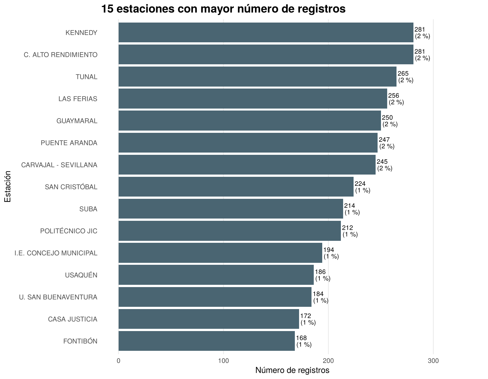
Las seis estaciones con más registros son de Bogotá (Centro de Alto Rendimiento, Kennedy, Tunal, Las Ferias, Guaymaral y Puente Aranda). Miden muchas variables durante todo el periodo, y por eso cada una tiene cerca del 2 % del total.
2.2.2 Distribución de registros por variable ambiental
# Frecuencia de las variables ambientales
frecuencia_variables <- df %>% count(Variable, sort = TRUE)
tabla(frecuencia_variables, c("Variable", "Registros"))| Variable | Registros |
|---|---|
| PM10 | 2.985 |
| PM2.5 | 1.984 |
| VViento | 1.254 |
| DViento | 1.099 |
| SO2 | 1.066 |
| PLiquida | 927 |
| TAire2 | 834 |
| O3 | 827 |
| CO | 719 |
| HAire2 | 693 |
| P | 673 |
| NO2 | 644 |
| RGlobal | 600 |
| HAire10 | 361 |
| TAire10 | 334 |
| NO | 291 |
| PST | 241 |
| HAire | 75 |
| TAire | 73 |
| RUVb | 66 |
# Registros por variable ambiental
barras_np(frecuencia_variables, "Variable", "n", "Número de registros por variable ambiental", "Variable ambiental",
total = nrow(df))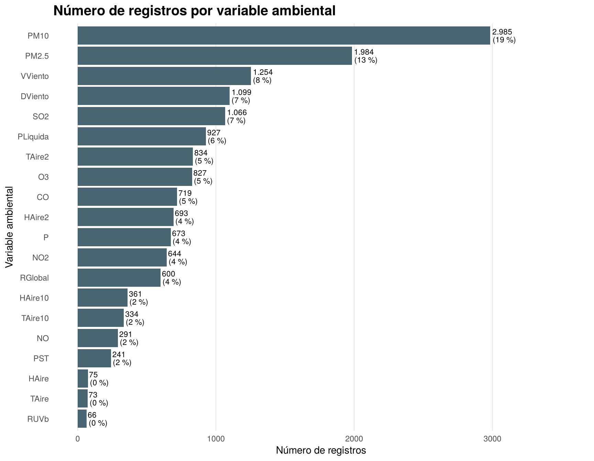
PM10 (19 %) y PM2.5 (13 %) suman casi un tercio de los registros, porque el material particulado es lo que más se vigila. TAire, HAire y RUVb tienen menos de 80 registros cada una, así que lo que se diga de ellas se basa en muy pocos datos.
2.3 Distribución temporal de los registros
# Registros por año
frecuencia_anios <- df %>% count(Año, name = "n") %>% arrange(Año)
tabla(frecuencia_anios, c("Año", "Registros"))| Año | Registros |
|---|---|
| 2011 | 647 |
| 2012 | 809 |
| 2013 | 912 |
| 2014 | 864 |
| 2015 | 903 |
| 2016 | 966 |
| 2017 | 1.354 |
| 2018 | 1.156 |
| 2019 | 932 |
| 2020 | 1.598 |
| 2021 | 1.860 |
| 2022 | 1.941 |
| 2023 | 853 |
| 2024 | 951 |
# Registros por año
ggplot(frecuencia_anios, aes(x = factor(Año), y = n)) +
geom_col(fill = "#4a6572") +
geom_text(aes(label = etiqueta_np(n, sum(n))), vjust = -0.2, size = 3, lineheight = 0.85) +
expand_limits(y = max(frecuencia_anios$n) * 1.15) +
labs(title = "Número de registros por año", x = "Año", y = "Número de registros") +
tema + theme(axis.text.x = element_text(angle = 45, hjust = 1))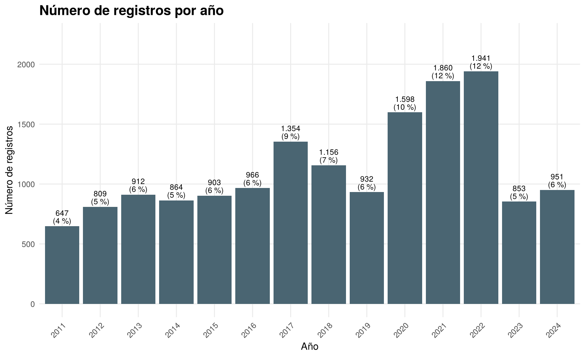
Los registros pasan de 647 en 2011 a 1.941 en 2022, o sea que la red casi se triplicó. En 2023 y 2024 bajan otra vez. Como la red cambia tanto, un promedio nacional puede subir o bajar solo porque entraron o salieron estaciones.
2.4 Estadística descriptiva y distribución de variables ambientales
# Estadística descriptiva de las variables ambientales
estadistica_variables <- df %>%
group_by(Variable) %>%
summarise(n = n(), Media = mean(Promedio, na.rm = TRUE), Mediana = median(Promedio, na.rm = TRUE),
Desv = sd(Promedio, na.rm = TRUE), Minimo = min(Promedio, na.rm = TRUE),
Q1 = quantile(Promedio, 0.25, na.rm = TRUE), Q3 = quantile(Promedio, 0.75, na.rm = TRUE),
Maximo = max(Promedio, na.rm = TRUE), .groups = "drop")
tabla(estadistica_variables, c("Variable", "n", "Media", "Mediana", "Desv. estándar", "Mínimo", "Q1", "Q3", "Máximo"))| Variable | n | Media | Mediana | Desv. estándar | Mínimo | Q1 | Q3 | Máximo |
|---|---|---|---|---|---|---|---|---|
| CO | 719 | 811,86 | 692,96 | 487,50 | 0,8 | 484,60 | 957,20 | 3.294,80 |
| DViento | 1.099 | 167,28 | 168,80 | 99,27 | 0,4 | 83,65 | 248,30 | 359,40 |
| HAire | 75 | 66,09 | 71,80 | 15,99 | 33,1 | 62,05 | 76,35 | 92,00 |
| HAire10 | 361 | 68,36 | 69,10 | 11,25 | 28,0 | 65,00 | 75,80 | 87,40 |
| HAire2 | 693 | 70,52 | 71,30 | 11,26 | 18,1 | 66,60 | 78,00 | 90,50 |
| NO | 291 | 25,00 | 20,80 | 18,91 | 0,2 | 11,75 | 34,25 | 97,20 |
| NO2 | 644 | 26,46 | 26,00 | 12,49 | 0,5 | 16,50 | 35,60 | 65,60 |
| O3 | 827 | 26,15 | 25,70 | 9,17 | 2,0 | 19,80 | 31,80 | 65,80 |
| P | 673 | 701,68 | 677,60 | 116,81 | 399,1 | 629,90 | 755,50 | 1.010,40 |
| PLiquida | 927 | 9,77 | 1,40 | 122,04 | 0,1 | 0,20 | 3,40 | 3.236,70 |
| PM10 | 2.985 | 37,12 | 34,60 | 15,35 | 4,6 | 27,00 | 44,80 | 162,30 |
| PM2.5 | 1.984 | 16,84 | 15,70 | 6,89 | 2,7 | 12,50 | 19,80 | 68,60 |
| PST | 241 | 74,14 | 72,00 | 25,79 | 11,1 | 56,30 | 87,40 | 162,40 |
| RGlobal | 600 | 185,64 | 178,45 | 53,87 | 48,3 | 156,88 | 206,40 | 431,30 |
| RUVb | 66 | 112,40 | 46,10 | 111,51 | 0,6 | 1,90 | 205,85 | 303,80 |
| SO2 | 1.066 | 9,43 | 6,00 | 10,67 | 0,1 | 3,40 | 11,00 | 91,71 |
| TAire | 73 | 22,62 | 22,30 | 4,04 | 13,4 | 20,60 | 25,00 | 33,50 |
| TAire10 | 334 | 22,09 | 22,00 | 3,37 | 12,4 | 20,60 | 24,05 | 32,40 |
| TAire2 | 834 | 20,55 | 21,40 | 6,17 | 1,0 | 14,80 | 25,37 | 44,00 |
| VViento | 1.254 | 1,37 | 1,20 | 0,79 | 0,1 | 0,90 | 1,70 | 10,20 |
Cada variable tiene su propia escala (la presión está cerca de 700 mmHg y el viento cerca de 1 m/s), así que solo se comparan consigo mismas.
En casi todos los contaminantes la media es mayor que la mediana, por ejemplo PM10 (37,1 y 34,6) y SO₂ (9,4 y 6,0). Unas pocas estaciones con valores altos suben el promedio. El caso más extremo es PLiquida, con una media de 9,8 mm y una mediana de 1,4 mm.
2.4.1 Distribución de las variables ambientales
# Distribución de las variables ambientales 1-5
ggplot(df %>% filter(Variable %in% unique(Variable)[1:5]), aes(x = "", y = Promedio)) + geom_boxplot(width = 0.5) + facet_wrap(~Variable, ncol = 2, scales = "free_y") + labs(title = "Distribución de las variables ambientales", subtitle = "Variables ambientales 1-5", x = NULL, y = "Valor promedio") + theme_minimal() + theme(plot.title = element_text(face = "bold", size = 16), plot.subtitle = element_text(size = 11), strip.text = element_text(face = "bold", size = 12), axis.text.x = element_blank(), axis.ticks.x = element_blank(), panel.grid.major.x = element_blank())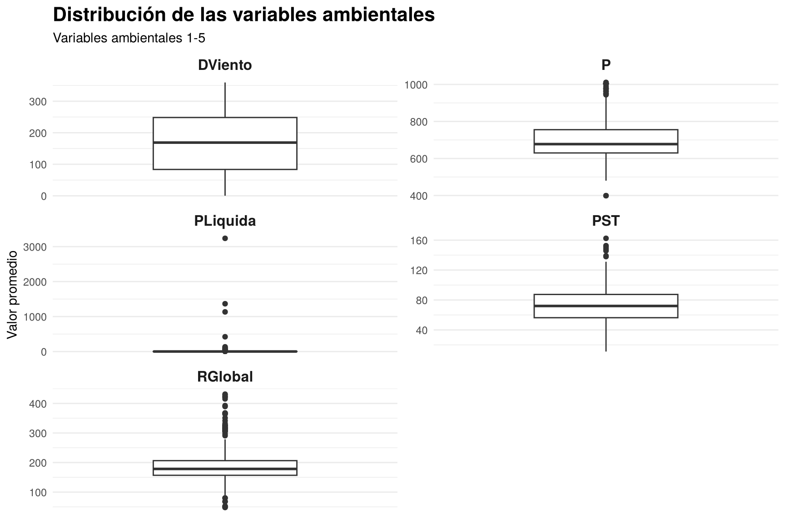
# Distribución de las variables ambientales 6-10
ggplot(df %>% filter(Variable %in% unique(Variable)[6:10]), aes(x = "", y = Promedio)) + geom_boxplot(width = 0.5) + facet_wrap(~Variable, ncol = 2, scales = "free_y") + labs(title = "Distribución de las variables ambientales", subtitle = "Variables ambientales 6-10", x = NULL, y = "Valor promedio") + theme_minimal() + theme(plot.title = element_text(face = "bold", size = 16), plot.subtitle = element_text(size = 11), strip.text = element_text(face = "bold", size = 12), axis.text.x = element_blank(), axis.ticks.x = element_blank(), panel.grid.major.x = element_blank())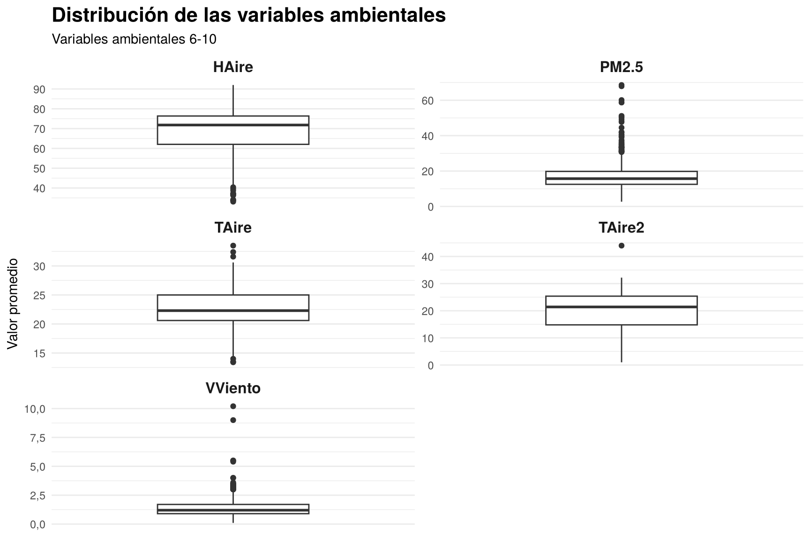
# Distribución de las variables ambientales 11-15
ggplot(df %>% filter(Variable %in% unique(Variable)[11:15]), aes(x = "", y = Promedio)) + geom_boxplot(width = 0.5) + facet_wrap(~Variable, ncol = 2, scales = "free_y") + labs(title = "Distribución de las variables ambientales", subtitle = "Variables ambientales 11-15", x = NULL, y = "Valor promedio") + theme_minimal() + theme(plot.title = element_text(face = "bold", size = 16), plot.subtitle = element_text(size = 11), strip.text = element_text(face = "bold", size = 12), axis.text.x = element_blank(), axis.ticks.x = element_blank(), panel.grid.major.x = element_blank())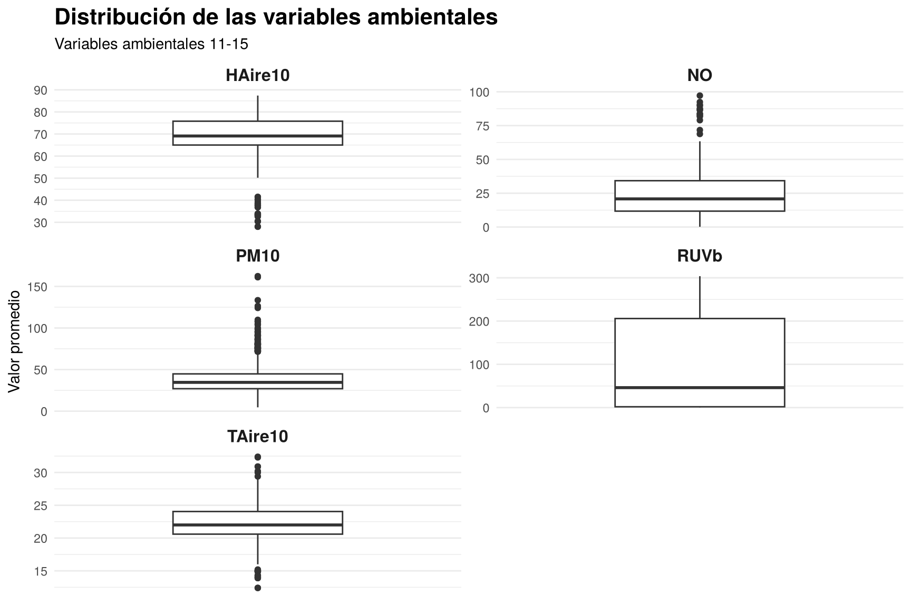
# Distribución de las variables ambientales 16-20
ggplot(df %>% filter(Variable %in% unique(Variable)[16:20]), aes(x = "", y = Promedio)) + geom_boxplot(width = 0.5) + facet_wrap(~Variable, ncol = 2, scales = "free_y") + labs(title = "Distribución de las variables ambientales", subtitle = "Variables ambientales 16-20", x = NULL, y = "Valor promedio") + theme_minimal() + theme(plot.title = element_text(face = "bold", size = 16), plot.subtitle = element_text(size = 11), strip.text = element_text(face = "bold", size = 12), axis.text.x = element_blank(), axis.ticks.x = element_blank(), panel.grid.major.x = element_blank())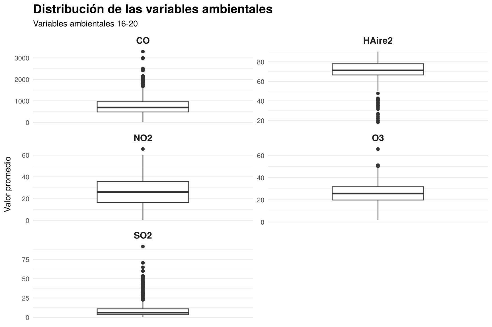
En la mayoría de las variables los puntos sueltos están por encima de la caja, lo que confirma la cola hacia la derecha. La caja de RUVb es muy grande porque mezcla dos escalas de medición.
2.4.2 Identificación de valores atípicos
Se usa el criterio de Tukey: es atípico todo valor menor que Q1 − 1,5·IQR o mayor que Q3 + 1,5·IQR.
# Identificación de valores atípicos por variable (criterio de Tukey)
outliers_variables <- df %>%
group_by(Variable) %>%
summarise(Q1 = quantile(Promedio, 0.25, na.rm = TRUE), Q3 = quantile(Promedio, 0.75, na.rm = TRUE),
n = n(), .groups = "drop") %>%
mutate(IQR = Q3 - Q1, Limite_inferior = Q1 - 1.5 * IQR, Limite_superior = Q3 + 1.5 * IQR)
atipicos <- df %>%
left_join(outliers_variables, by = "Variable") %>%
group_by(Variable) %>%
summarise(Atipicos = sum(Promedio < Limite_inferior | Promedio > Limite_superior, na.rm = TRUE), .groups = "drop")
outliers_variables <- outliers_variables %>%
left_join(atipicos, by = "Variable") %>%
mutate(Porcentaje = Atipicos / n * 100) %>%
arrange(desc(Porcentaje))
tk <- function(v, col) outliers_variables[[col]][outliers_variables$Variable == v]2.4.3 Resumen de valores atípicos
# Tabla de valores atípicos por variable ambiental
cat("Total de registros atípicos:", sum(outliers_variables$Atipicos), "de", nrow(df))## Total de registros atípicos: 638 de 15746outliers_variables %>%
select(Variable, Q1, Q3, IQR, Limite_inferior, Limite_superior, Atipicos, Porcentaje) %>%
tabla(c("Variable", "Q1", "Q3", "IQR", "Límite inferior", "Límite superior", "Atípicos", "% atípicos"))| Variable | Q1 | Q3 | IQR | Límite inferior | Límite superior | Atípicos | % atípicos |
|---|---|---|---|---|---|---|---|
| HAire | 62,05 | 76,35 | 14,30 | 40,60 | 97,80 | 12 | 16,00 |
| SO2 | 3,40 | 11,00 | 7,60 | -8,00 | 22,40 | 93 | 8,72 |
| CO | 484,60 | 957,20 | 472,60 | -224,31 | 1.666,11 | 62 | 8,62 |
| TAire10 | 20,60 | 24,05 | 3,45 | 15,42 | 29,23 | 28 | 8,38 |
| TAire | 20,60 | 25,00 | 4,40 | 14,00 | 31,60 | 6 | 8,22 |
| HAire10 | 65,00 | 75,80 | 10,80 | 48,80 | 92,00 | 25 | 6,93 |
| RGlobal | 156,88 | 206,40 | 49,53 | 82,59 | 280,69 | 40 | 6,67 |
| PLiquida | 0,20 | 3,40 | 3,20 | -4,60 | 8,20 | 61 | 6,58 |
| P | 629,90 | 755,50 | 125,60 | 441,50 | 943,90 | 44 | 6,54 |
| HAire2 | 66,60 | 78,00 | 11,40 | 49,50 | 95,10 | 35 | 5,05 |
| NO | 11,75 | 34,25 | 22,50 | -22,00 | 68,00 | 14 | 4,81 |
| PM2.5 | 12,50 | 19,80 | 7,30 | 1,55 | 30,75 | 74 | 3,73 |
| PM10 | 27,00 | 44,80 | 17,80 | 0,30 | 71,50 | 91 | 3,05 |
| PST | 56,30 | 87,40 | 31,10 | 9,65 | 134,05 | 7 | 2,90 |
| VViento | 0,90 | 1,70 | 0,80 | -0,30 | 2,90 | 35 | 2,79 |
| O3 | 19,80 | 31,80 | 12,00 | 1,80 | 49,80 | 9 | 1,09 |
| NO2 | 16,50 | 35,60 | 19,10 | -12,15 | 64,25 | 1 | 0,16 |
| TAire2 | 14,80 | 25,37 | 10,57 | -1,06 | 41,24 | 1 | 0,12 |
| DViento | 83,65 | 248,30 | 164,65 | -163,33 | 495,28 | 0 | 0,00 |
| RUVb | 1,90 | 205,85 | 203,95 | -304,03 | 511,78 | 0 | 0,00 |
En total hay 638 registros atípicos, el 4,1 % del dataset. La variable con más atípicos en proporción es HAire, con 12 de 75 registros (16 %) fuera de los límites de 40,6 y 97,8 %. Le siguen el SO₂, con 93 registros (8,7 %) por encima de 22,4 µg/m³, y el CO, con 62 registros (8,6 %) por encima de 1.666,1.
En el material particulado el límite superior es 71,50 µg/m³ para el PM10 (91 atípicos, 3,0 %) y 30,75 µg/m³ para el PM2.5 (74 atípicos, 3,7 %). El NO₂ solo tiene 1 atípico por encima de 64,25 µg/m³, y DViento y RUVb no tienen ninguno porque su rango intercuartílico es muy amplio (164,65 y 203,95).
Cuando el límite inferior es negativo, como en el CO (-224,31) o el SO₂ (-8,0), no puede haber atípicos bajos porque esas variables no toman valores negativos.
2.5 Representatividad temporal de los datos
# Representatividad temporal por variable ambiental
representatividad_variables <- df %>%
group_by(Variable) %>%
summarise(Media = mean(`Representatividad Temporal`, na.rm = TRUE),
Mediana = median(`Representatividad Temporal`, na.rm = TRUE),
Minimo = min(`Representatividad Temporal`, na.rm = TRUE),
Maximo = max(`Representatividad Temporal`, na.rm = TRUE), .groups = "drop") %>%
arrange(desc(Media))
tabla(representatividad_variables, c("Variable", "Media (%)", "Mediana (%)", "Mínimo (%)", "Máximo (%)"))| Variable | Media (%) | Mediana (%) | Mínimo (%) | Máximo (%) |
|---|---|---|---|---|
| P | 75,37 | 90,0 | 0 | 100 |
| TAire10 | 73,99 | 92,0 | 0 | 100 |
| RUVb | 73,74 | 89,5 | 6 | 100 |
| CO | 72,59 | 86,0 | 0 | 100 |
| RGlobal | 71,56 | 87,0 | 0 | 100 |
| PLiquida | 69,80 | 89,0 | 0 | 100 |
| DViento | 68,59 | 86,0 | 0 | 167 |
| HAire10 | 68,13 | 87,0 | 0 | 100 |
| O3 | 67,62 | 80,0 | 0 | 100 |
| NO | 66,92 | 85,0 | 0 | 100 |
| PM2.5 | 66,84 | 81,0 | 0 | 103 |
| PST | 66,59 | 79,0 | 0 | 101 |
| NO2 | 66,13 | 77,0 | 0 | 100 |
| PM10 | 65,97 | 79,0 | 0 | 115 |
| TAire2 | 65,57 | 82,0 | 0 | 100 |
| HAire2 | 64,13 | 79,0 | 0 | 100 |
| SO2 | 63,47 | 72,0 | 1 | 100 |
| VViento | 62,86 | 79,0 | 0 | 100 |
| HAire | 27,49 | 15,0 | 3 | 99 |
| TAire | 23,93 | 14,5 | 3 | 90 |
# Representatividad temporal promedio por variable
ggplot(representatividad_variables, aes(x = reorder(Variable, Media), y = Media)) +
geom_col(fill = "#4a6572") +
geom_text(aes(label = fmt(Media, 1)), hjust = -0.1, size = 3.3) +
coord_flip() +
expand_limits(y = max(representatividad_variables$Media) * 1.1) +
labs(title = "Representatividad temporal promedio por variable", x = "Variable ambiental",
y = "Representatividad temporal (%)") +
tema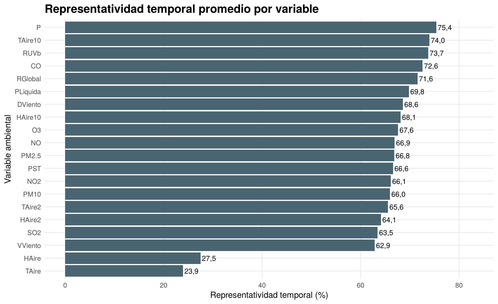
La mayoría de variables tiene entre 63 % y 75 % de representatividad, o sea que en un registro normal falta cerca de un tercio del año. TAire y HAire son las más bajas, con cerca de 24 % y 27 %. Solo el 56,4 % de los registros llega al 75 % de cobertura.
# Registros con representatividad mayor a 100 %
tabla(data.frame(Registros = sum(df$`Representatividad Temporal` > 100, na.rm = TRUE),
Maximo = max(df$`Representatividad Temporal`, na.rm = TRUE)),
c("Registros con más de 100 %", "Máximo reportado (%)"), dec = 1)| Registros con más de 100 % | Máximo reportado (%) |
|---|---|
| 12 | 167 |
Una representatividad de más de 100 % no es posible, porque no se puede medir más que el año completo. Son errores de captura. Se dejan anotados pero no se corrigen porque no se sabe cuál es el valor real.
2.6 Distribución geográfica de las estaciones
# Ubicación de las estaciones sobre imagen satelital
ubicacion_estaciones <- df %>%
group_by(Estación) %>%
summarise(Latitud = mean(Latitud), Longitud = mean(Longitud), Municipio = first(`Nombre del Municipio`),
Registros = n(), .groups = "drop")
cat("Estaciones:", nrow(ubicacion_estaciones))## Estaciones: 654mapa_satelital(ubicacion_estaciones$Latitud, ubicacion_estaciones$Longitud, 8,
paste0(ubicacion_estaciones$Estación, " (", ubicacion_estaciones$Municipio, ")"),
"Ubicación de las estaciones de monitoreo", color = "#7fdcff")Las estaciones se concentran en la región Andina, sobre todo en Bogotá, el Valle de Aburrá y Cali. En el Caribe hay estaciones en Barranquilla, Santa Marta, Cartagena y en las zonas carboníferas del Cesar y La Guajira. La Amazonía, la Orinoquía y el Pacífico casi no tienen estaciones.
2.6.1 Distribución por tipo de estación
# Registros por tipo de estación
frecuencia_tipo_estacion <- df %>%
mutate(`Tipo de Estación` = ifelse(is.na(`Tipo de Estación`) | `Tipo de Estación` == "N/A", "Sin dato", `Tipo de Estación`)) %>%
count(`Tipo de Estación`, sort = TRUE) %>%
mutate(Porcentaje = n / sum(n) * 100)
tabla(frecuencia_tipo_estacion, c("Tipo de estación", "Registros", "Porcentaje (%)"), dec = 1)| Tipo de estación | Registros | Porcentaje (%) |
|---|---|---|
| Fija | 14.184 | 90,1 |
| Indicativa | 1.560 | 9,9 |
| Sin dato | 2 | 0,0 |
# Registros por tipo de estación
barras_np(frecuencia_tipo_estacion %>% filter(`Tipo de Estación` != "Sin dato"), "Tipo de Estación", "n",
"Distribución de registros por tipo de estación", "Tipo de estación", total = nrow(df))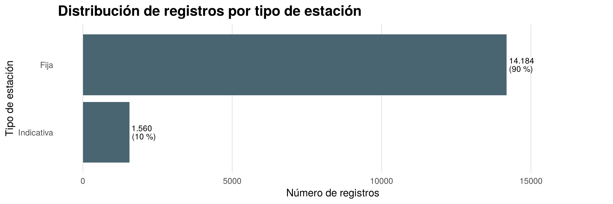
El 90 % de los registros (14.184) viene de estaciones fijas, que miden todo el año. Las indicativas son campañas temporales.
2.6.2 Distribución por departamento
# Registros por departamento, con los nombres tal como vienen en el archivo
frecuencia_departamentos <- df %>% count(`Nombre del Departamento`, sort = TRUE)
tabla(frecuencia_departamentos, c("Departamento", "Registros"))| Departamento | Registros |
|---|---|
| ANTIOQUIA | 4.244 |
| BOGOTÁ, D.C. | 2.143 |
| VALLE DEL CAUCA | 1.434 |
| SANTANDER | 940 |
| BOGOTA, D.C. | 840 |
| CUNDINAMARCA | 757 |
| CESAR | 524 |
| BOYACÁ | 515 |
| MAGDALENA | 493 |
| Bogotá, D.C. | 410 |
| LA GUAJIRA | 382 |
| Cundinamarca | 367 |
| ATLÁNTICO | 327 |
| Antioquia | 322 |
| BOYACA | 282 |
| META | 244 |
| CAUCA | 145 |
| Valle del Cauca | 145 |
| Boyacá | 125 |
| BOLÍVAR | 114 |
| CALDAS | 92 |
| ATLANTICO | 84 |
| Bolívar | 81 |
| RISARALDA | 81 |
| Santander | 66 |
| CÓRDOBA | 63 |
| Magdalena | 63 |
| NORTE DE SANTANDER | 60 |
| TOLIMA | 52 |
| Cesar | 47 |
| Caldas | 44 |
| Atlántico | 30 |
| CORDOBA | 28 |
| ARAUCA | 25 |
| HUILA | 25 |
| Risaralda | 21 |
| La Guajira | 20 |
| Norte de Santander | 19 |
| Meta | 18 |
| QUINDÍO | 15 |
| Córdoba | 12 |
| CASANARE | 11 |
| NARIÑO | 11 |
| CHOCÓ | 7 |
| Cauca | 5 |
| Huila | 4 |
| QUINDIO | 4 |
| Tolima | 3 |
| Quindío | 2 |
# Departamentos 1 a 24
barras_np(frecuencia_departamentos %>% slice(1:24), "Nombre del Departamento", "n", "Registros por departamento",
"Departamento", subtitulo = "Nombres tal como vienen en el archivo, 1 a 24", total = nrow(df), tam = 2.6)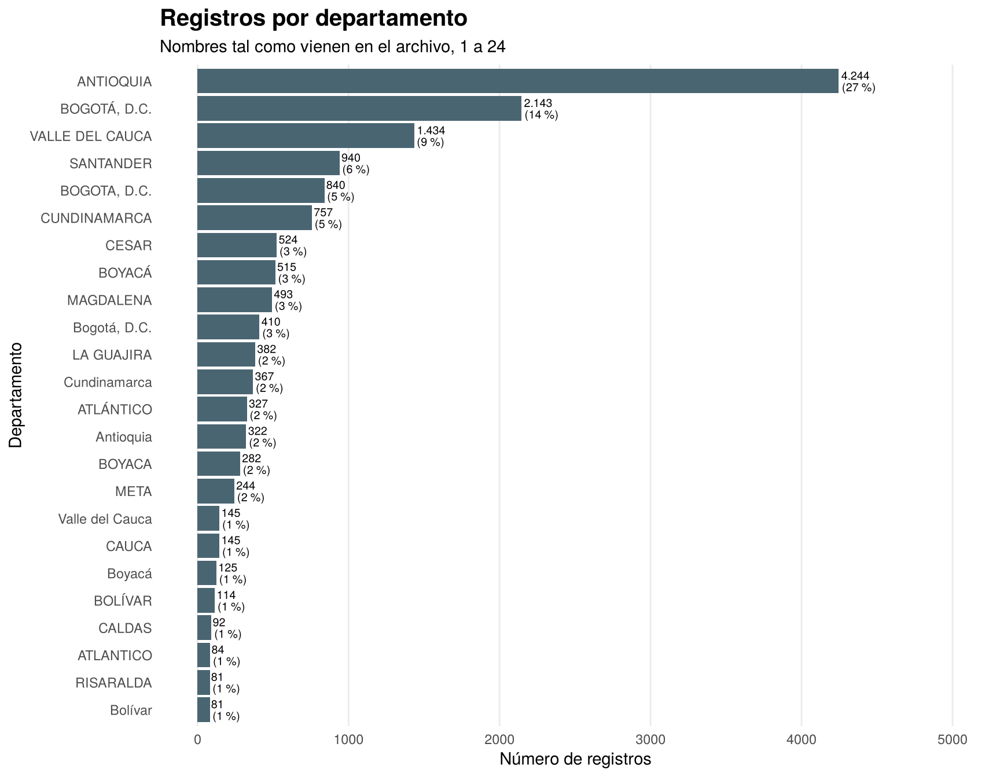
# Departamentos 25 a 49
barras_np(frecuencia_departamentos %>% slice(25:49), "Nombre del Departamento", "n", "Registros por departamento",
"Departamento", subtitulo = "Nombres tal como vienen en el archivo, 25 a 49", total = nrow(df), tam = 2.6)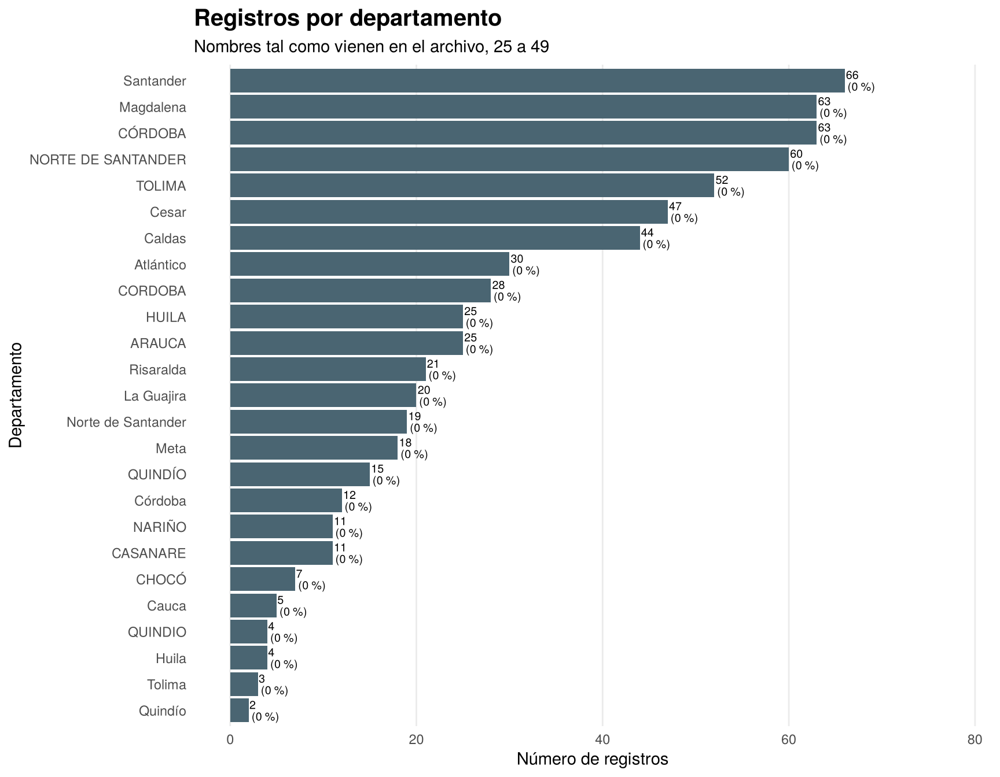
En la tabla el mismo departamento aparece escrito de varias formas, por ejemplo BOGOTÁ, D.C., BOGOTA, D.C. y Bogotá, D.C., o ANTIOQUIA y Antioquia. Por eso salen 49 departamentos. Abajo se normalizan los nombres (sin tildes y en mayúsculas).
# Normalizar nombres de departamento y municipio
normalizar <- function(x) stringi::stri_trans_general(x, "Latin-ASCII") %>% toupper() %>% trimws()
df <- df %>% mutate(Departamento_norm = normalizar(`Nombre del Departamento`),
Municipio_norm = normalizar(`Nombre del Municipio`))
tabla(data.frame(Columna = c("Departamento", "Municipio"),
Archivo = c(n_distinct(df$`Nombre del Departamento`), n_distinct(df$`Nombre del Municipio`)),
Normalizados = c(n_distinct(df$Departamento_norm), n_distinct(df$Municipio_norm))),
c("Columna", "Nombres en el archivo", "Nombres normalizados"))| Columna | Nombres en el archivo | Nombres normalizados |
|---|---|---|
| Departamento | 49 | 24 |
| Municipio | 339 | 193 |
# Registros por departamento con los nombres normalizados
barras_np(df %>% count(Departamento_norm), "Departamento_norm", "n", "Registros por departamento",
"Departamento", subtitulo = "Nombres normalizados", total = nrow(df), tam = 2.7)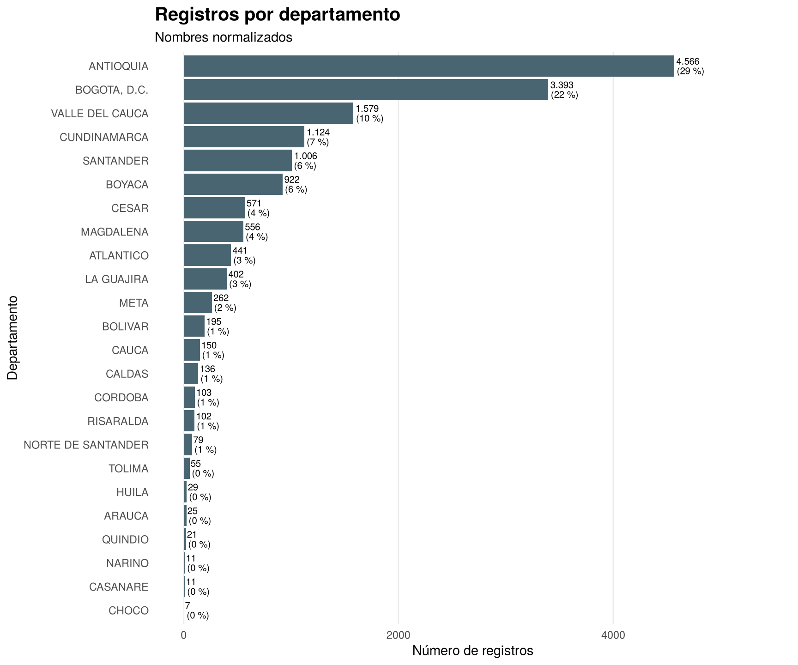
Al normalizar quedan 24 departamentos y 193 municipios. Antioquia y Bogotá tienen la mitad de los registros, y después vienen Valle del Cauca y Cundinamarca. La Amazonía, la Orinoquía y casi todo el Pacífico no tienen monitoreo, así que los resultados nacionales representan sobre todo a las ciudades andinas.
2.6.3 Distribución por municipio
# Registros por municipio sobre imagen satelital (nombres normalizados)
municipios <- df %>%
group_by(Municipio_norm) %>%
summarise(Departamento = first(Departamento_norm), Registros = n(), Estaciones = n_distinct(Estación),
Latitud = mean(Latitud), Longitud = mean(Longitud), .groups = "drop") %>%
arrange(desc(Registros))
mapa_satelital(municipios$Latitud, municipios$Longitud, sqrt(municipios$Registros) * 0.9 + 5,
paste0(municipios$Municipio_norm, ": ", municipios$Registros, " registros, ",
municipios$Estaciones, " estaciones"),
"Registros por municipio (el tamaño del punto es proporcional al número de registros)")Bogotá es el punto más grande, con 3.397 registros, seguido por Medellín (1.488) y Cali (1.036). Alrededor de Medellín aparecen varios puntos medianos (Itagüí, Girardota, Bello, Sabaneta), porque el Valle de Aburrá tiene una red densa.
# 20 municipios con más registros
barras_np(head(municipios, 20), "Municipio_norm", "Registros", "20 municipios con más registros", "Municipio",
subtitulo = "Nombres normalizados", total = nrow(df))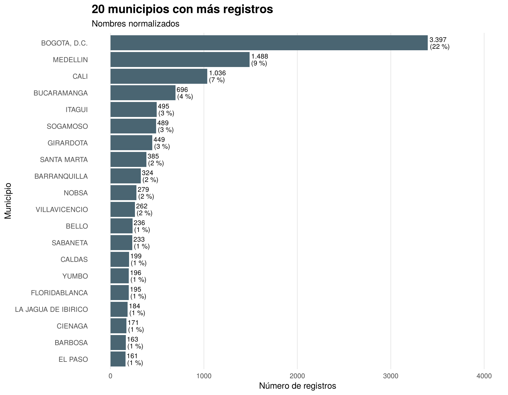
Los 20 municipios con más registros son capitales con redes grandes (Bogotá, Medellín, Cali, Bucaramanga, Santa Marta) y municipios industriales o mineros como Sogamoso y Nobsa (cemento y acero) o La Jagua de Ibirico (carbón), donde se vigilan fuentes de emisión puntuales.
2.7 Análisis específico de contaminantes
Para cada contaminante se muestra la estadística descriptiva y la distribución por región. Las regiones se definen por la latitud de la estación: sur (menos de 4°), centro (4° a 6°, Bogotá y Cundinamarca), centro-norte (6° a 8°, Antioquia, Santander y Boyacá) y Caribe (más de 8°).
# Región de cada registro según la latitud de la estación
df <- df %>% mutate(Región = cut(Latitud, c(-5, 4, 6, 8, 15), labels = REGIONES))
tabla(df %>% group_by(Región) %>% summarise(Estaciones = n_distinct(Estación), Registros = n()),
c("Región", "Estaciones", "Registros"))| Región | Estaciones | Registros |
|---|---|---|
| Sur (< 4°) | 49 | 1.711 |
| Centro (4–6°) | 180 | 6.311 |
| Centro-norte (6–8°) | 300 | 5.476 |
| Caribe (> 8°) | 129 | 2.248 |
2.7.1 PM10
# Estadística descriptiva de PM10
estadistica_pm10 <- data.frame(Estadistico = c("Mínimo", "Primer cuartil", "Mediana", "Media", "Tercer cuartil", "Máximo"), Valor = c(min(pm10$Promedio, na.rm = TRUE), quantile(pm10$Promedio, 0.25, na.rm = TRUE), median(pm10$Promedio, na.rm = TRUE), mean(pm10$Promedio, na.rm = TRUE), quantile(pm10$Promedio, 0.75, na.rm = TRUE), max(pm10$Promedio, na.rm = TRUE)))
estadistica_pm10 %>% mutate(Valor = round(Valor, 2)) %>% knitr::kable(col.names = c("Estadístico", "Valor")) %>% kableExtra::kable_styling(full_width = FALSE, position = "left")| Estadístico | Valor |
|---|---|
| Mínimo | 4,60 |
| Primer cuartil | 27,00 |
| Mediana | 34,60 |
| Media | 37,12 |
| Tercer cuartil | 44,80 |
| Máximo | 162,30 |
El PM10 tiene 2.985 registros. La media (37,1 µg/m³) es algo mayor que la mediana (34,6 µg/m³), así que la distribución tiene cola hacia la derecha. El máximo es 162,3 µg/m³.
# PM10: promedio por año (se usa para el cambio entre 2011 y 2024) y resumen por región
pm10_anual <- pm10 %>% group_by(Año) %>%
summarise(Promedio_PM10 = mean(Promedio, na.rm = TRUE), Registros = n(), .groups = "drop")
resumen_region(pm10)| Región | Registros | Mediana | Q1 | Q3 | Máximo |
|---|---|---|---|---|---|
| Sur (< 4°) | 349 | 36,4 | 28,50 | 47,70 | 133,4 |
| Centro (4–6°) | 1.227 | 32,2 | 25,60 | 42,75 | 162,3 |
| Centro-norte (6–8°) | 731 | 37,4 | 27,82 | 47,60 | 99,8 |
| Caribe (> 8°) | 678 | 36,3 | 28,90 | 42,88 | 92,0 |
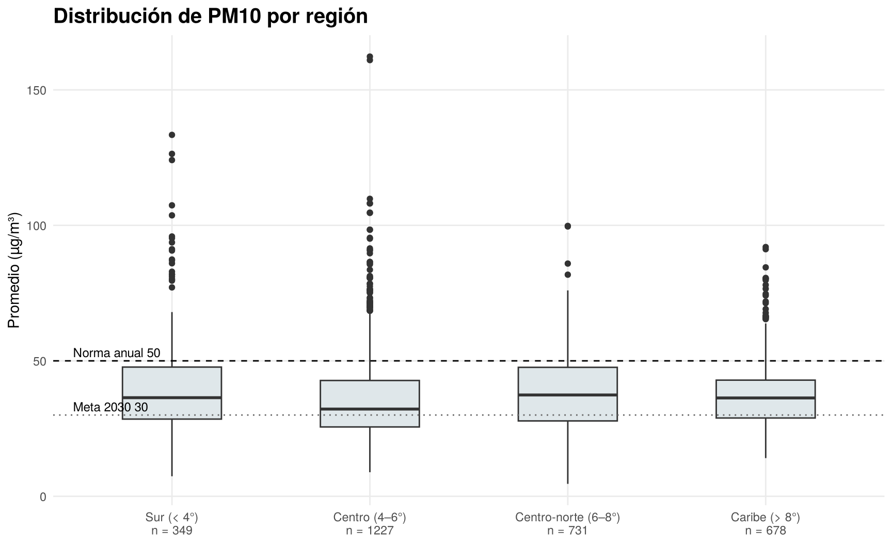
Las medianas de PM10 son parecidas entre regiones, entre 32,2 µg/m³ en el centro (Bogotá y alrededores) y 37,4 µg/m³ en el centro-norte (Valle de Aburrá). En todas las regiones la mediana está por debajo de la norma anual de 50 µg/m³, pero por encima de la meta de 2030 (30 µg/m³).
# Cambio porcentual de PM10 entre 2011 y 2024
PM10_2011 <- pm10_anual$Promedio_PM10[pm10_anual$Año == 2011]
PM10_2024 <- pm10_anual$Promedio_PM10[pm10_anual$Año == 2024]
cambio_porcentual <- ((PM10_2024 - PM10_2011) / PM10_2011) * 100
tabla_cambio_pm10 <- data.frame(
Periodo = "2011-2024",
Promedio_2011 = PM10_2011,
Promedio_2024 = PM10_2024,
Cambio_porcentual = cambio_porcentual
)
tabla_cambio_pm10 %>%
mutate(
Promedio_2011 = round(Promedio_2011, 2),
Promedio_2024 = round(Promedio_2024, 2),
Cambio_porcentual = round(Cambio_porcentual, 2)
) %>%
knitr::kable(
col.names = c(
"Periodo",
"Promedio 2011",
"Promedio 2024",
"Cambio (%)"
)
) %>%
kableExtra::kable_styling(
full_width = FALSE,
position = "left"
)| Periodo | Promedio 2011 | Promedio 2024 | Cambio (%) |
|---|---|---|---|
| 2011-2024 | 42,66 | 30,83 | -27,75 |
Entre 2011 y 2024 el promedio nacional de PM10 bajó 27,75 %.
2.7.2 PM2.5
# Estadística descriptiva de PM2.5
pm25 <- df %>%
filter(Variable == "PM2.5")
estadistica_pm25 <- data.frame(
Estadistico = c(
"Mínimo",
"Primer cuartil",
"Mediana",
"Media",
"Tercer cuartil",
"Máximo"
),
Valor = c(
min(pm25$Promedio, na.rm = TRUE),
quantile(pm25$Promedio, 0.25, na.rm = TRUE),
median(pm25$Promedio, na.rm = TRUE),
mean(pm25$Promedio, na.rm = TRUE),
quantile(pm25$Promedio, 0.75, na.rm = TRUE),
max(pm25$Promedio, na.rm = TRUE)
)
)
estadistica_pm25 %>%
mutate(Valor = round(Valor, 2)) %>%
knitr::kable(
col.names = c("Estadístico", "Valor")
) %>%
kableExtra::kable_styling(
full_width = FALSE,
position = "left"
)| Estadístico | Valor |
|---|---|
| Mínimo | 2,70 |
| Primer cuartil | 12,50 |
| Mediana | 15,70 |
| Media | 16,84 |
| Tercer cuartil | 19,80 |
| Máximo | 68,60 |
El PM2.5 tiene 1.984 registros y valores más bajos que el PM10, porque es la fracción fina del material particulado. La media (16,8 µg/m³) y la mediana (15,7 µg/m³) son cercanas.
# PM2.5: promedio por año (se usa para el cambio entre 2011 y 2024) y resumen por región
pm25_anual <- pm25 %>% group_by(Año) %>%
summarise(Promedio_PM25 = mean(Promedio, na.rm = TRUE), Registros = n(), .groups = "drop")
resumen_region(pm25)| Región | Registros | Mediana | Q1 | Q3 | Máximo |
|---|---|---|---|---|---|
| Sur (< 4°) | 222 | 14,64 | 11,60 | 18,79 | 30,0 |
| Centro (4–6°) | 807 | 14,90 | 12,29 | 18,40 | 68,6 |
| Centro-norte (6–8°) | 702 | 17,78 | 14,10 | 22,48 | 51,1 |
| Caribe (> 8°) | 253 | 13,66 | 10,40 | 16,80 | 40,3 |
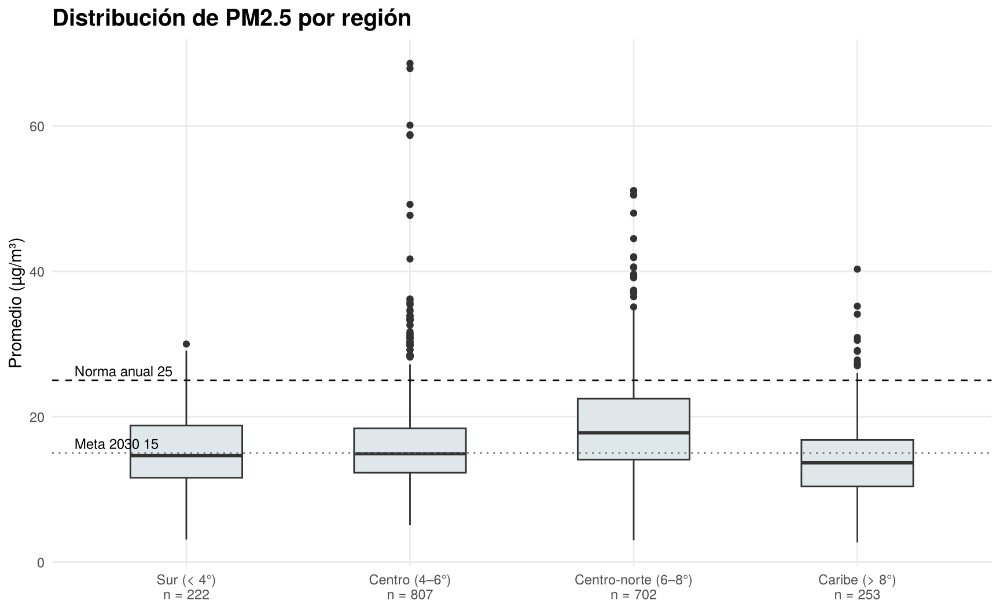
El centro-norte tiene la mediana más alta de PM2.5 (17,8 µg/m³). Ahí está el Valle de Aburrá, donde las montañas encierran los contaminantes. El Caribe tiene la más baja (13,7 µg/m³). Todas las medianas están por debajo de la norma anual de 25 µg/m³, y la del centro-norte es la única que pasa la meta de 2030 (15 µg/m³).
# Cambio porcentual de PM2.5 entre 2011 y 2024
tabla_cambio_pm25 <- data.frame(Periodo = "2011–2024", PM25_2011 = pm25_anual$Promedio_PM25[pm25_anual$Año == 2011], PM25_2024 = pm25_anual$Promedio_PM25[pm25_anual$Año == 2024], Cambio_porcentual = ((pm25_anual$Promedio_PM25[pm25_anual$Año == 2024] - pm25_anual$Promedio_PM25[pm25_anual$Año == 2011]) / pm25_anual$Promedio_PM25[pm25_anual$Año == 2011]) * 100)
tabla_cambio_pm25 %>% mutate(across(where(is.numeric), ~round(.x, 2))) %>% knitr::kable(col.names = c("Periodo", "Promedio 2011", "Promedio 2024", "Cambio (%)")) %>% kableExtra::kable_styling(full_width = FALSE, position = "left")| Periodo | Promedio 2011 | Promedio 2024 | Cambio (%) |
|---|---|---|---|
| 2011–2024 | 21,46 | 14,73 | -31,35 |
Entre 2011 y 2024 el promedio nacional de PM2.5 bajó 31,35 %.
2.7.3 NO₂
# Estadística descriptiva de NO2
no2 <- df %>% filter(Variable == "NO2")
estadistica_no2 <- data.frame(Estadistico = c("Mínimo", "Primer cuartil", "Mediana", "Media", "Tercer cuartil", "Máximo"), Valor = c(min(no2$Promedio, na.rm = TRUE), quantile(no2$Promedio, 0.25, na.rm = TRUE), median(no2$Promedio, na.rm = TRUE), mean(no2$Promedio, na.rm = TRUE), quantile(no2$Promedio, 0.75, na.rm = TRUE), max(no2$Promedio, na.rm = TRUE)))
estadistica_no2 %>% mutate(Valor = round(Valor, 2)) %>% knitr::kable(col.names = c("Estadístico", "Valor")) %>% kableExtra::kable_styling(full_width = FALSE, position = "left")| Estadístico | Valor |
|---|---|
| Mínimo | 0,50 |
| Primer cuartil | 16,50 |
| Mediana | 26,00 |
| Media | 26,46 |
| Tercer cuartil | 35,60 |
| Máximo | 65,60 |
El NO₂ tiene 644 registros. La media (26,5 µg/m³) y la mediana (26,0 µg/m³) son casi iguales.
# NO₂: promedio por año (se usa para el cambio entre 2011 y 2024) y resumen por región
no2_anual <- no2 %>% group_by(Año) %>%
summarise(Promedio_NO2 = mean(Promedio, na.rm = TRUE), Registros = n(), .groups = "drop")
resumen_region(no2)| Región | Registros | Mediana | Q1 | Q3 | Máximo |
|---|---|---|---|---|---|
| Sur (< 4°) | 29 | 13,40 | 9,50 | 15,40 | 45,6 |
| Centro (4–6°) | 398 | 26,35 | 17,30 | 35,08 | 60,4 |
| Centro-norte (6–8°) | 192 | 29,95 | 19,92 | 37,12 | 65,6 |
| Caribe (> 8°) | 25 | 10,80 | 8,50 | 15,80 | 33,2 |
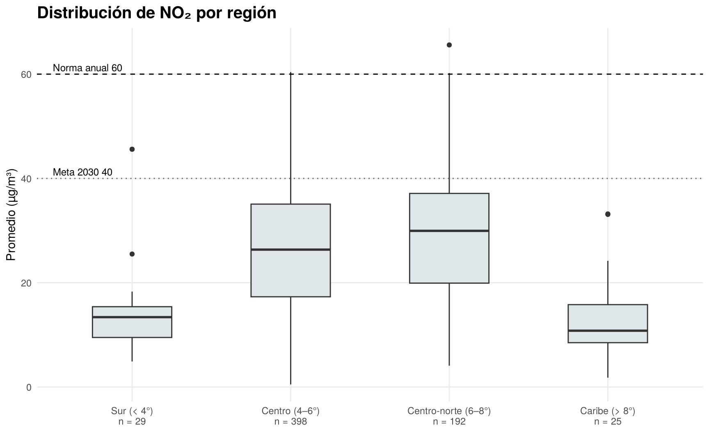
El NO₂ es el contaminante con más diferencia entre regiones. En el centro y el centro-norte la mediana está entre 26,4 y 30,0 µg/m³, más del doble que en el sur (13,4) y el Caribe (10,8). El NO₂ viene sobre todo del tráfico vehicular, que es mayor en las ciudades andinas. El sur y el Caribe tienen pocos registros (29 y 25). Todos los valores están lejos de la norma anual de 60 µg/m³.
tabla_cambio_no2 <- data.frame(Periodo = "2011–2024", NO2_2011 = no2_anual$Promedio_NO2[no2_anual$Año == 2011], NO2_2024 = no2_anual$Promedio_NO2[no2_anual$Año == 2024], Cambio_porcentual = ((no2_anual$Promedio_NO2[no2_anual$Año == 2024] - no2_anual$Promedio_NO2[no2_anual$Año == 2011]) / no2_anual$Promedio_NO2[no2_anual$Año == 2011]) * 100)
tabla_cambio_no2 %>% mutate(across(where(is.numeric), ~round(.x, 2))) %>% knitr::kable(col.names = c("Periodo", "Promedio 2011", "Promedio 2024", "Cambio (%)")) %>% kableExtra::kable_styling(full_width = FALSE, position = "left")| Periodo | Promedio 2011 | Promedio 2024 | Cambio (%) |
|---|---|---|---|
| 2011–2024 | 36,28 | 26,88 | -25,9 |
Entre 2011 y 2024 el promedio nacional de NO₂ bajó 25,90 %.
2.7.4 O₃
# Estadística descriptiva de O3
o3 <- df %>% filter(Variable == "O3")
estadistica_o3 <- data.frame(Estadistico = c("Mínimo", "Primer cuartil", "Mediana", "Media", "Tercer cuartil", "Máximo"), Valor = c(min(o3$Promedio, na.rm = TRUE), quantile(o3$Promedio, 0.25, na.rm = TRUE), median(o3$Promedio, na.rm = TRUE), mean(o3$Promedio, na.rm = TRUE), quantile(o3$Promedio, 0.75, na.rm = TRUE), max(o3$Promedio, na.rm = TRUE)))
estadistica_o3 %>% mutate(Valor = round(Valor, 2)) %>% knitr::kable(col.names = c("Estadístico", "Valor")) %>% kableExtra::kable_styling(full_width = FALSE, position = "left")| Estadístico | Valor |
|---|---|
| Mínimo | 2,00 |
| Primer cuartil | 19,80 |
| Mediana | 25,70 |
| Media | 26,15 |
| Tercer cuartil | 31,80 |
| Máximo | 65,80 |
El ozono tiene 827 registros, con media y mediana cercanas (26,2 y 25,7 µg/m³).
# O₃: promedio por año (se usa para el cambio entre 2011 y 2024) y resumen por región
o3_anual <- o3 %>% group_by(Año) %>%
summarise(Promedio_O3 = mean(Promedio, na.rm = TRUE), Registros = n(), .groups = "drop")
resumen_region(o3)| Región | Registros | Mediana | Q1 | Q3 | Máximo |
|---|---|---|---|---|---|
| Sur (< 4°) | 120 | 28,6 | 18,82 | 36,47 | 65,80 |
| Centro (4–6°) | 355 | 22,4 | 17,60 | 26,75 | 50,40 |
| Centro-norte (6–8°) | 273 | 28,8 | 24,10 | 33,20 | 48,70 |
| Caribe (> 8°) | 79 | 30,5 | 24,15 | 39,00 | 51,01 |
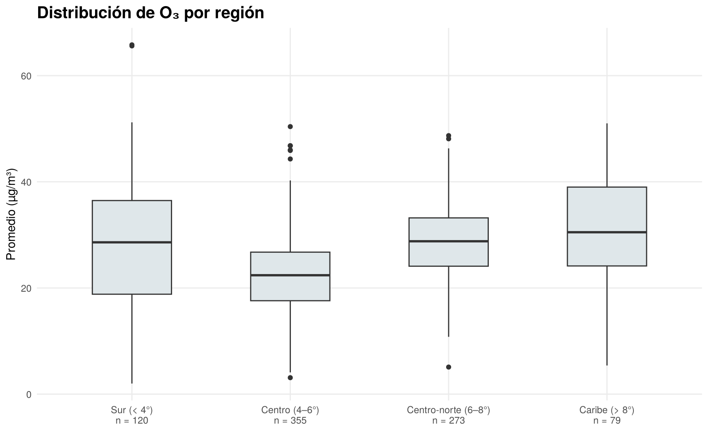
El ozono es más alto en el Caribe (mediana de 30,5 µg/m³) y más bajo en el centro (22,4 µg/m³). El ozono se forma con la luz solar, y el Caribe es la región con más radiación (ver RGlobal más abajo).
# Cambio porcentual de O3 entre 2011 y 2024
cambio_o3 <- ((o3_anual$Promedio_O3[o3_anual$Año == 2024] - o3_anual$Promedio_O3[o3_anual$Año == 2011]) / o3_anual$Promedio_O3[o3_anual$Año == 2011]) * 100
# Tabla de cambio porcentual de O3
tabla_cambio_o3 <- data.frame(Periodo = "2011–2024", O3_2011 = o3_anual$Promedio_O3[o3_anual$Año == 2011], O3_2024 = o3_anual$Promedio_O3[o3_anual$Año == 2024], Cambio_porcentual = cambio_o3)
tabla_cambio_o3 %>% mutate(across(where(is.numeric), ~round(.x, 2))) %>% knitr::kable(col.names = c("Periodo", "Promedio 2011", "Promedio 2024", "Cambio (%)")) %>% kableExtra::kable_styling(full_width = FALSE, position = "left")| Periodo | Promedio 2011 | Promedio 2024 | Cambio (%) |
|---|---|---|---|
| 2011–2024 | 23,94 | 27,29 | 14 |
El ozono es el único contaminante cuyo promedio nacional subió entre 2011 y 2024 (14,0 %).
2.7.5 SO₂
# Estadística descriptiva de SO2
so2 <- df %>% filter(Variable == "SO2")
estadistica_so2 <- data.frame(Estadistico = c("Mínimo", "Primer cuartil", "Mediana", "Media", "Tercer cuartil", "Máximo"), Valor = c(min(so2$Promedio, na.rm = TRUE), quantile(so2$Promedio, 0.25, na.rm = TRUE), median(so2$Promedio, na.rm = TRUE), mean(so2$Promedio, na.rm = TRUE), quantile(so2$Promedio, 0.75, na.rm = TRUE), max(so2$Promedio, na.rm = TRUE)))
estadistica_so2 %>% mutate(Valor = round(Valor, 2)) %>% knitr::kable(col.names = c("Estadístico", "Valor")) %>% kableExtra::kable_styling(full_width = FALSE, position = "left")| Estadístico | Valor |
|---|---|
| Mínimo | 0,10 |
| Primer cuartil | 3,40 |
| Mediana | 6,00 |
| Media | 9,43 |
| Tercer cuartil | 11,00 |
| Máximo | 91,71 |
El SO₂ tiene cola larga hacia la derecha: la media (9,4 µg/m³) es mucho mayor que la mediana (6,0 µg/m³) y el máximo llega a 91,7 µg/m³.
# SO₂: promedio por año (se usa para el cambio entre 2011 y 2024) y resumen por región
so2_anual <- so2 %>% group_by(Año) %>%
summarise(Promedio_SO2 = mean(Promedio, na.rm = TRUE), Registros = n(), .groups = "drop")
resumen_region(so2)| Región | Registros | Mediana | Q1 | Q3 | Máximo |
|---|---|---|---|---|---|
| Sur (< 4°) | 102 | 6,7 | 3,23 | 10,78 | 64,70 |
| Centro (4–6°) | 751 | 6,1 | 3,90 | 11,20 | 91,71 |
| Centro-norte (6–8°) | 102 | 8,8 | 2,10 | 13,47 | 24,40 |
| Caribe (> 8°) | 111 | 2,9 | 1,10 | 6,45 | 24,30 |
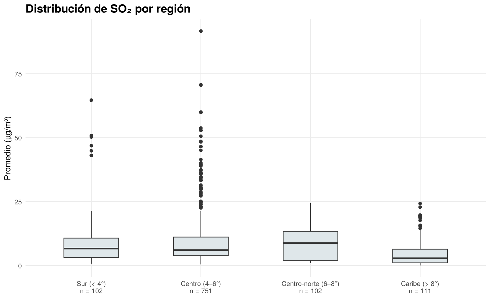
El SO₂ es más alto en el centro-norte (mediana de 8,8 µg/m³) y muy bajo en el Caribe (2,9 µg/m³). Los valores altos aparecen como puntos sueltos sobre las cajas y corresponden a pocas estaciones cerca de industrias.
# Porcentaje de cambio de SO2 entre 2011 y 2024
cambio_so2 <- ((so2_anual$Promedio_SO2[so2_anual$Año == 2024] - so2_anual$Promedio_SO2[so2_anual$Año == 2011]) / so2_anual$Promedio_SO2[so2_anual$Año == 2011]) * 100
# Tabla de cambio porcentual de SO2
tabla_cambio_so2 <- data.frame(Periodo = "2011–2024", SO2_2011 = so2_anual$Promedio_SO2[so2_anual$Año == 2011], SO2_2024 = so2_anual$Promedio_SO2[so2_anual$Año == 2024], Cambio_porcentual = cambio_so2)
tabla_cambio_so2 %>% mutate(across(where(is.numeric), ~round(.x, 2))) %>% knitr::kable(col.names = c("Periodo", "Promedio 2011", "Promedio 2024", "Cambio (%)")) %>% kableExtra::kable_styling(full_width = FALSE, position = "left")| Periodo | Promedio 2011 | Promedio 2024 | Cambio (%) |
|---|---|---|---|
| 2011–2024 | 15,14 | 9,86 | -34,84 |
Entre 2011 y 2024 el promedio nacional de SO₂ bajó 34,84 %, pero ese promedio depende de pocas estaciones industriales que entran y salen de la red.
2.7.6 Comparación del cambio porcentual de los contaminantes
comparacion_contaminantes <- data.frame(Contaminante = c("PM10", "PM2.5", "NO2", "O3", "SO2"), Promedio_2011 = c(pm10_anual$Promedio_PM10[pm10_anual$Año == 2011], pm25_anual$Promedio_PM25[pm25_anual$Año == 2011], no2_anual$Promedio_NO2[no2_anual$Año == 2011], o3_anual$Promedio_O3[o3_anual$Año == 2011], so2_anual$Promedio_SO2[so2_anual$Año == 2011]), Promedio_2024 = c(pm10_anual$Promedio_PM10[pm10_anual$Año == 2024], pm25_anual$Promedio_PM25[pm25_anual$Año == 2024], no2_anual$Promedio_NO2[no2_anual$Año == 2024], o3_anual$Promedio_O3[o3_anual$Año == 2024], so2_anual$Promedio_SO2[so2_anual$Año == 2024]))
comparacion_contaminantes <- comparacion_contaminantes %>% mutate(Cambio_porcentual = ((Promedio_2024 - Promedio_2011) / Promedio_2011) * 100)
comparacion_contaminantes %>% mutate(across(where(is.numeric), ~round(.x, 2))) %>% knitr::kable(col.names = c("Contaminante", "Promedio 2011", "Promedio 2024", "Cambio (%)")) %>% kableExtra::kable_styling(full_width = FALSE, position = "left")| Contaminante | Promedio 2011 | Promedio 2024 | Cambio (%) |
|---|---|---|---|
| PM10 | 42,66 | 30,83 | -27,75 |
| PM2.5 | 21,46 | 14,73 | -31,35 |
| NO2 | 36,28 | 26,88 | -25,90 |
| O3 | 23,94 | 27,29 | 14,00 |
| SO2 | 15,14 | 9,86 | -34,84 |
# Comparación del cambio porcentual de los principales contaminantes
ggplot(comparacion_contaminantes, aes(x = reorder(Contaminante, Cambio_porcentual), y = Cambio_porcentual)) + geom_col() + geom_text(aes(label = paste0(round(Cambio_porcentual, 1), "%")), hjust = ifelse(comparacion_contaminantes$Cambio_porcentual < 0, 1.1, -0.1), size = 3.5) + coord_flip() + labs(title = "Cambio porcentual de los principales contaminantes", subtitle = "Variación del promedio entre 2011 y 2024", x = "Contaminante", y = "Cambio porcentual (%)") + theme_minimal() + theme(plot.title = element_text(face = "bold", size = 16), plot.subtitle = element_text(size = 11), panel.grid.major.y = element_blank(), panel.grid.minor = element_blank()) + expand_limits(y = range(comparacion_contaminantes$Cambio_porcentual) * 1.15)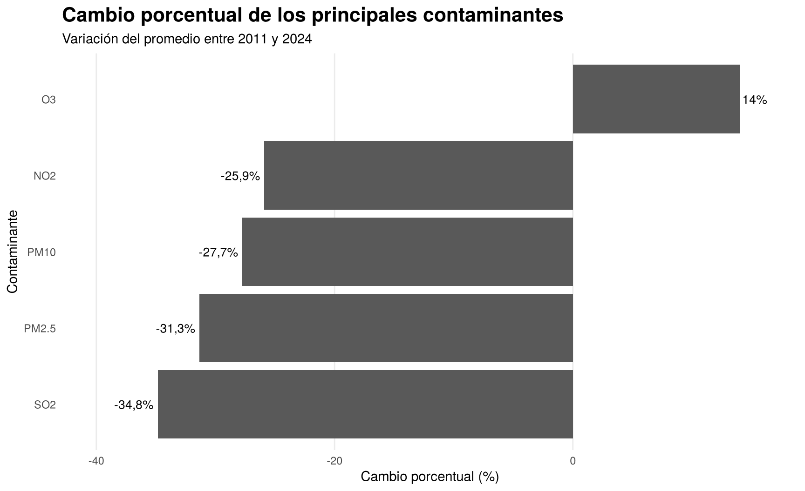
Cuatro de los cinco contaminantes bajaron entre 2011 y 2024. El material particulado bajó cerca de 30 % y el ozono subió.
2.8 Análisis de variables meteorológicas
2.8.1 Temperatura del aire (TAire)
# Estadística descriptiva de TAire
taire <- df %>% filter(Variable == "TAire")
estadistica_taire <- data.frame(Estadistico = c("Mínimo", "Primer cuartil", "Mediana", "Media", "Tercer cuartil", "Máximo"), Valor = c(min(taire$Promedio, na.rm = TRUE), quantile(taire$Promedio, 0.25, na.rm = TRUE), median(taire$Promedio, na.rm = TRUE), mean(taire$Promedio, na.rm = TRUE), quantile(taire$Promedio, 0.75, na.rm = TRUE), max(taire$Promedio, na.rm = TRUE)))
estadistica_taire %>% mutate(Valor = round(Valor, 2)) %>% knitr::kable(col.names = c("Estadístico", "Valor")) %>% kableExtra::kable_styling(full_width = FALSE, position = "left")| Estadístico | Valor |
|---|---|
| Mínimo | 13,40 |
| Primer cuartil | 20,60 |
| Mediana | 22,30 |
| Media | 22,62 |
| Tercer cuartil | 25,00 |
| Máximo | 33,50 |
TAire tiene 73 registros, con media de 22,6 °C.
# TAire: promedio por año (se usa para el cambio entre 2011 y 2024) y resumen por región
taire_anual <- taire %>% group_by(Año) %>%
summarise(Promedio_TAire = mean(Promedio, na.rm = TRUE), Registros = n(), .groups = "drop")
resumen_region(taire)| Región | Registros | Mediana | Q1 | Q3 | Máximo |
|---|---|---|---|---|---|
| Centro (4–6°) | 22 | 24,5 | 22,58 | 25,08 | 25,5 |
| Centro-norte (6–8°) | 51 | 22,0 | 20,40 | 23,85 | 33,5 |
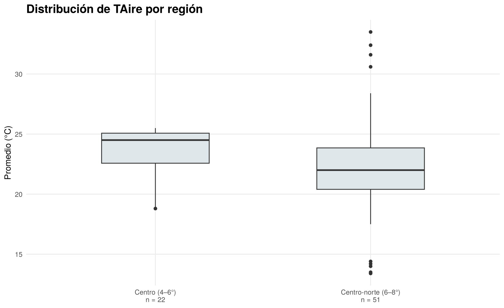
TAire solo tiene registros en el centro (22) y el centro-norte (51). Con tan pocos registros no se puede comparar entre regiones. TAire2 y TAire10 tienen 834 y 334 registros y sirven mejor para estudiar la temperatura.
2.8.2 Humedad relativa del aire (HAire)
# Estadística descriptiva de HAire
haire <- df %>% filter(Variable == "HAire")
estadistica_haire <- data.frame(Estadistico = c("Mínimo", "Primer cuartil", "Mediana", "Media", "Tercer cuartil", "Máximo"), Valor = c(min(haire$Promedio, na.rm = TRUE), quantile(haire$Promedio, 0.25, na.rm = TRUE), median(haire$Promedio, na.rm = TRUE), mean(haire$Promedio, na.rm = TRUE), quantile(haire$Promedio, 0.75, na.rm = TRUE), max(haire$Promedio, na.rm = TRUE)))
estadistica_haire %>% mutate(Valor = round(Valor, 2)) %>% knitr::kable(col.names = c("Estadístico", "Valor")) %>% kableExtra::kable_styling(full_width = FALSE, position = "left")| Estadístico | Valor |
|---|---|
| Mínimo | 33,10 |
| Primer cuartil | 62,05 |
| Mediana | 71,80 |
| Media | 66,09 |
| Tercer cuartil | 76,35 |
| Máximo | 92,00 |
# HAire: promedio por año (se usa para el cambio entre 2011 y 2024) y resumen por región
haire_anual <- haire %>% group_by(Año) %>%
summarise(Promedio_HAire = mean(Promedio, na.rm = TRUE), Registros = n(), .groups = "drop")
resumen_region(haire)| Región | Registros | Mediana | Q1 | Q3 | Máximo |
|---|---|---|---|---|---|
| Sur (< 4°) | 6 | 66,9 | 63,30 | 69,45 | 70,3 |
| Centro (4–6°) | 25 | 71,8 | 63,00 | 73,20 | 78,8 |
| Centro-norte (6–8°) | 44 | 73,6 | 44,75 | 79,55 | 92,0 |
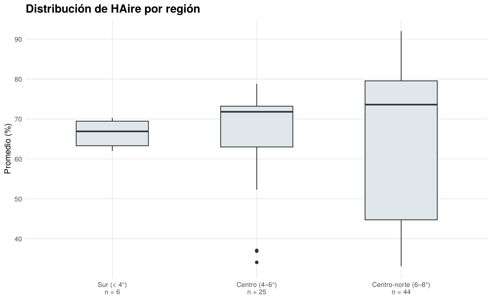
La humedad relativa tiene medianas entre 66,9 % (sur) y 73,6 % (centro-norte). No hay registros en el Caribe y el sur solo tiene 6.
2.8.3 Velocidad del viento (VViento)
# Estadística descriptiva de VViento
vviento <- df %>% filter(Variable == "VViento")
estadistica_vviento <- data.frame(Estadistico = c("Mínimo", "Primer cuartil", "Mediana", "Media", "Tercer cuartil", "Máximo"), Valor = c(min(vviento$Promedio, na.rm = TRUE), quantile(vviento$Promedio, 0.25, na.rm = TRUE), median(vviento$Promedio, na.rm = TRUE), mean(vviento$Promedio, na.rm = TRUE), quantile(vviento$Promedio, 0.75, na.rm = TRUE), max(vviento$Promedio, na.rm = TRUE)))
estadistica_vviento %>% mutate(Valor = round(Valor, 2)) %>% knitr::kable(col.names = c("Estadístico", "Valor")) %>% kableExtra::kable_styling(full_width = FALSE, position = "left")| Estadístico | Valor |
|---|---|
| Mínimo | 0,10 |
| Primer cuartil | 0,90 |
| Mediana | 1,20 |
| Media | 1,37 |
| Tercer cuartil | 1,70 |
| Máximo | 10,20 |
# VViento: promedio por año (se usa para el cambio entre 2011 y 2024) y resumen por región
vviento_anual <- vviento %>% group_by(Año) %>%
summarise(Promedio_VViento = mean(Promedio, na.rm = TRUE), Registros = n(), .groups = "drop")
resumen_region(vviento)| Región | Registros | Mediana | Q1 | Q3 | Máximo |
|---|---|---|---|---|---|
| Sur (< 4°) | 130 | 1,2 | 0,8 | 1,6 | 3,3 |
| Centro (4–6°) | 383 | 1,4 | 1,0 | 1,9 | 9,0 |
| Centro-norte (6–8°) | 584 | 1,1 | 0,8 | 1,5 | 10,2 |
| Caribe (> 8°) | 157 | 1,2 | 0,9 | 2,2 | 5,5 |
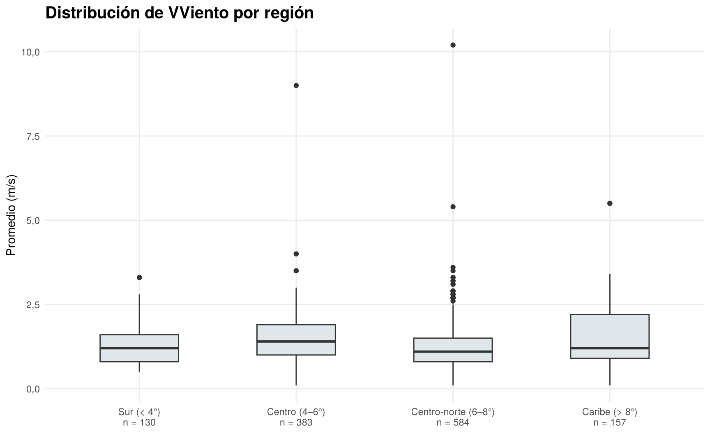
El viento es débil en todas las regiones, con medianas entre 1,1 y 1,4 m/s. El centro-norte tiene el valor más bajo (1,1 m/s) y también la mediana más alta de PM2.5. Con poco viento los contaminantes se dispersan menos.
2.8.4 Dirección del viento (DViento)
# Estadística descriptiva de DViento
dviento <- df %>% filter(Variable == "DViento")
estadistica_dviento <- data.frame(Estadistico = c("Mínimo", "Primer cuartil", "Mediana", "Máximo"), Valor = c(min(dviento$Promedio, na.rm = TRUE), quantile(dviento$Promedio, 0.25, na.rm = TRUE), median(dviento$Promedio, na.rm = TRUE), max(dviento$Promedio, na.rm = TRUE)))
estadistica_dviento %>% mutate(Valor = round(Valor, 2)) %>% knitr::kable(col.names = c("Estadístico", "Valor")) %>% kableExtra::kable_styling(full_width = FALSE, position = "left")| Estadístico | Valor |
|---|---|
| Mínimo | 0,40 |
| Primer cuartil | 83,65 |
| Mediana | 168,80 |
| Máximo | 359,40 |
La dirección del viento se mide en grados (0° a 360°) y es una variable circular. El promedio de 350° y 10° da 180° (sur), aunque los dos vientos vienen del norte. Por eso sus estadísticos no tienen sentido físico y habría que usar estadística circular o una rosa de los vientos.
2.8.5 Presión atmosférica (P)
# Estadística descriptiva de P
presion <- df %>% filter(Variable == "P")
estadistica_presion <- data.frame(Estadistico = c("Mínimo", "Primer cuartil", "Mediana", "Media", "Tercer cuartil", "Máximo"), Valor = c(min(presion$Promedio, na.rm = TRUE), quantile(presion$Promedio, 0.25, na.rm = TRUE), median(presion$Promedio, na.rm = TRUE), mean(presion$Promedio, na.rm = TRUE), quantile(presion$Promedio, 0.75, na.rm = TRUE), max(presion$Promedio, na.rm = TRUE)))
estadistica_presion %>% mutate(Valor = round(Valor, 2)) %>% knitr::kable(col.names = c("Estadístico", "Valor")) %>% kableExtra::kable_styling(full_width = FALSE, position = "left")| Estadístico | Valor |
|---|---|
| Mínimo | 399,10 |
| Primer cuartil | 629,90 |
| Mediana | 677,60 |
| Media | 701,68 |
| Tercer cuartil | 755,50 |
| Máximo | 1010,40 |
# presión (P): promedio por año (se usa para el cambio entre 2011 y 2024) y resumen por región
presion_anual <- presion %>% group_by(Año) %>%
summarise(Promedio_P = mean(Promedio, na.rm = TRUE), Registros = n(), .groups = "drop")
resumen_region(presion)| Región | Registros | Mediana | Q1 | Q3 | Máximo |
|---|---|---|---|---|---|
| Sur (< 4°) | 90 | 677,8 | 676,42 | 818,50 | 907,1 |
| Centro (4–6°) | 183 | 565,6 | 563,90 | 756,00 | 962,2 |
| Centro-norte (6–8°) | 294 | 639,8 | 632,47 | 683,30 | 865,7 |
| Caribe (> 8°) | 106 | 755,6 | 751,70 | 977,38 | 1.010,4 |
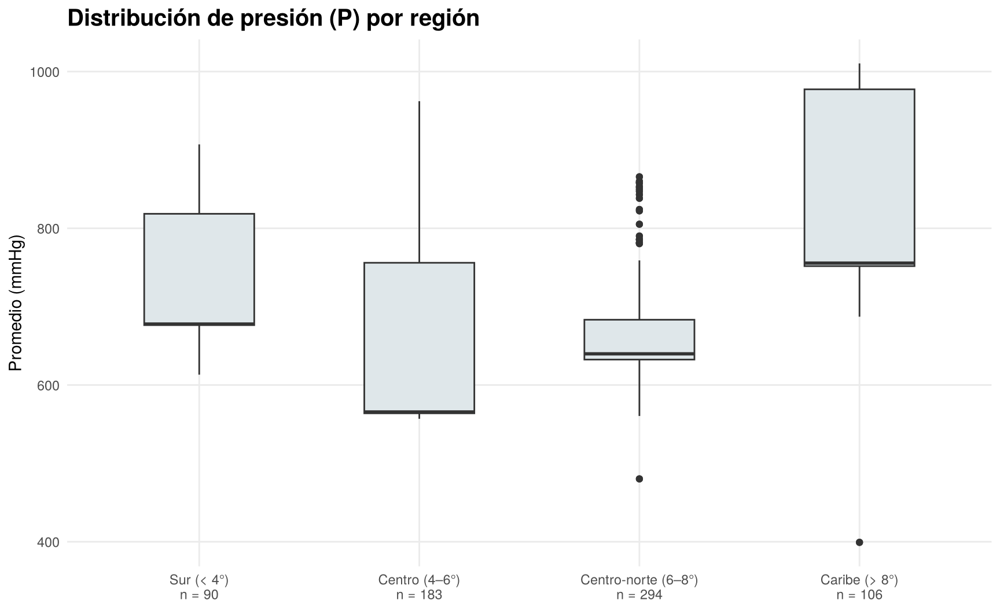
Las medianas de presión siguen la altitud: 565,6 mmHg en el centro (Bogotá está a unos 2.600 m) y 755,6 mmHg en el Caribe, casi a nivel del mar. Eso indica que la mayoría de los datos son correctos. Los puntos por encima de 800 mmHg no corresponden a ninguna altitud posible. El siguiente bloque muestra de dónde salen.
# Registros de presión por encima de 800 mmHg
sospechosos <- presion %>% filter(Promedio > 800)
cat("Registros de presión por encima de 800 mmHg:", nrow(sospechosos), "de", nrow(presion))## Registros de presión por encima de 800 mmHg: 108 de 673tabla(sospechosos %>% count(`Nombre del Municipio`, sort = TRUE) %>% head(6), c("Municipio", "Registros"))| Municipio | Registros |
|---|---|
| CALI | 22 |
| BARRANQUILLA | 18 |
| VILLAVICENCIO | 18 |
| MEDELLÍN | 8 |
| SANTA MARTA | 8 |
| GIRARDOTA | 6 |
Hay registros de más de 800 mmHg en Cali, Villavicencio y Barranquilla. En Cali, a unos 1.000 m de altura, la presión real es de unos 680 mmHg, y ni siquiera a nivel del mar pasa de 760 mmHg. Los valores cercanos a 1.010 son hectopascales (hPa) marcados como mmHg. Esta variable no se puede usar sin corregir las unidades.
2.8.6 Precipitación líquida (PLiquida)
# Estadística descriptiva de PLiquida
pliquida <- df %>% filter(Variable == "PLiquida")
estadistica_pliquida <- data.frame(Estadistico = c("Mínimo", "Primer cuartil", "Mediana", "Media", "Tercer cuartil", "Máximo"), Valor = c(min(pliquida$Promedio, na.rm = TRUE), quantile(pliquida$Promedio, 0.25, na.rm = TRUE), median(pliquida$Promedio, na.rm = TRUE), mean(pliquida$Promedio, na.rm = TRUE), quantile(pliquida$Promedio, 0.75, na.rm = TRUE), max(pliquida$Promedio, na.rm = TRUE)))
estadistica_pliquida %>% mutate(Valor = round(Valor, 2)) %>% knitr::kable(col.names = c("Estadístico", "Valor")) %>% kableExtra::kable_styling(full_width = FALSE, position = "left")| Estadístico | Valor |
|---|---|
| Mínimo | 0,10 |
| Primer cuartil | 0,20 |
| Mediana | 1,40 |
| Media | 9,77 |
| Tercer cuartil | 3,40 |
| Máximo | 3236,70 |
# PLiquida: promedio por año (se usa para el cambio entre 2011 y 2024) y resumen por región
pliquida_anual <- pliquida %>% group_by(Año) %>%
summarise(Promedio_PLiquida = mean(Promedio, na.rm = TRUE), Registros = n(), .groups = "drop")
resumen_region(pliquida)| Región | Registros | Mediana | Q1 | Q3 | Máximo |
|---|---|---|---|---|---|
| Sur (< 4°) | 115 | 2,3 | 0,25 | 5,80 | 422,5 |
| Centro (4–6°) | 331 | 1,2 | 0,10 | 2,70 | 49,1 |
| Centro-norte (6–8°) | 366 | 1,8 | 0,20 | 4,00 | 22,4 |
| Caribe (> 8°) | 115 | 1,5 | 0,55 | 3,85 | 3.236,7 |
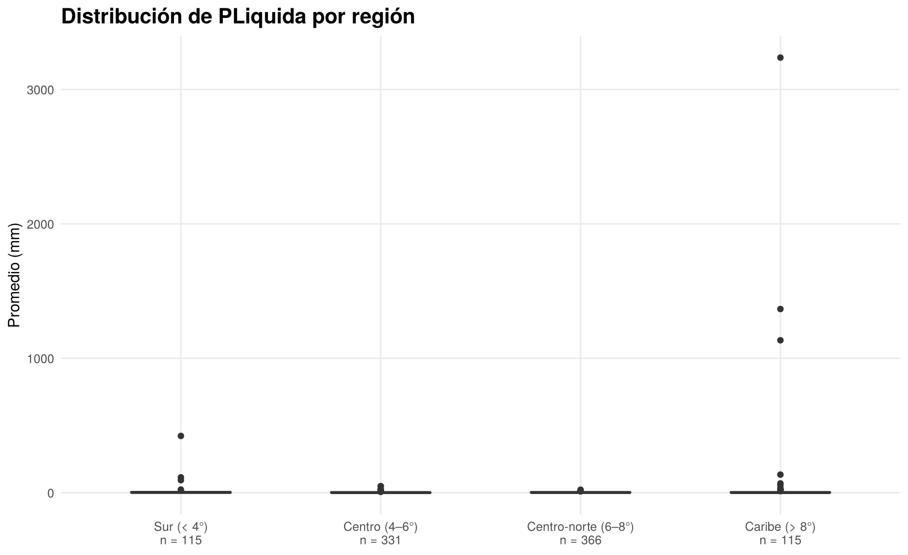
Las medianas de precipitación son bajas en todas las regiones, entre 1,2 y 2,3 mm, pero hay valores muy lejos de las cajas. Parecen acumulados reportados como promedio, por eso en esta variable se usa la mediana.
2.8.7 Radiación global (RGlobal)
# Estadística descriptiva de RGlobal
rglobal <- df %>% filter(Variable == "RGlobal")
estadistica_rglobal <- data.frame(Estadistico = c("Mínimo", "Primer cuartil", "Mediana", "Media", "Tercer cuartil", "Máximo"), Valor = c(min(rglobal$Promedio, na.rm = TRUE), quantile(rglobal$Promedio, 0.25, na.rm = TRUE), median(rglobal$Promedio, na.rm = TRUE), mean(rglobal$Promedio, na.rm = TRUE), quantile(rglobal$Promedio, 0.75, na.rm = TRUE), max(rglobal$Promedio, na.rm = TRUE)))
estadistica_rglobal %>% mutate(Valor = round(Valor, 2)) %>% knitr::kable(col.names = c("Estadístico", "Valor")) %>% kableExtra::kable_styling(full_width = FALSE, position = "left")| Estadístico | Valor |
|---|---|
| Mínimo | 48,30 |
| Primer cuartil | 156,88 |
| Mediana | 178,45 |
| Media | 185,64 |
| Tercer cuartil | 206,40 |
| Máximo | 431,30 |
# RGlobal: promedio por año (se usa para el cambio entre 2011 y 2024) y resumen por región
rglobal_anual <- rglobal %>% group_by(Año) %>%
summarise(Promedio_RGlobal = mean(Promedio, na.rm = TRUE), Registros = n(), .groups = "drop")
resumen_region(rglobal)| Región | Registros | Mediana | Q1 | Q3 | Máximo |
|---|---|---|---|---|---|
| Sur (< 4°) | 96 | 186,25 | 161,8 | 234,48 | 422,0 |
| Centro (4–6°) | 151 | 168,30 | 148,8 | 186,60 | 315,1 |
| Centro-norte (6–8°) | 271 | 178,20 | 158,5 | 193,10 | 415,4 |
| Caribe (> 8°) | 82 | 219,10 | 192,5 | 238,97 | 431,3 |
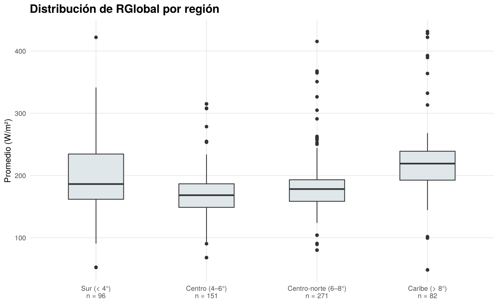
La radiación global es mayor en el Caribe (mediana de 219,1 W/m²) y menor en el centro (168,3 W/m²), donde hay más nubosidad.
2.8.8 Radiación ultravioleta B (RUVb)
# Estadística descriptiva de RUVb
ruvb <- df %>% filter(Variable == "RUVb")
estadistica_ruvb <- data.frame(Estadistico = c("Mínimo", "Primer cuartil", "Mediana", "Media", "Tercer cuartil", "Máximo"), Valor = c(min(ruvb$Promedio, na.rm = TRUE), quantile(ruvb$Promedio, 0.25, na.rm = TRUE), median(ruvb$Promedio, na.rm = TRUE), mean(ruvb$Promedio, na.rm = TRUE), quantile(ruvb$Promedio, 0.75, na.rm = TRUE), max(ruvb$Promedio, na.rm = TRUE)))
estadistica_ruvb %>% mutate(Valor = round(Valor, 2)) %>% knitr::kable(col.names = c("Estadístico", "Valor")) %>% kableExtra::kable_styling(full_width = FALSE, position = "left")| Estadístico | Valor |
|---|---|
| Mínimo | 0,60 |
| Primer cuartil | 1,90 |
| Mediana | 46,10 |
| Media | 112,40 |
| Tercer cuartil | 205,85 |
| Máximo | 303,80 |
# RUVb: promedio por año (se usa para el cambio entre 2011 y 2024) y resumen por región
ruvb_anual <- ruvb %>% group_by(Año) %>%
summarise(Promedio_RUVb = mean(Promedio, na.rm = TRUE), Registros = n(), .groups = "drop")
resumen_region(ruvb)| Región | Registros | Mediana | Q1 | Q3 | Máximo |
|---|---|---|---|---|---|
| Sur (< 4°) | 6 | 45,80 | 44,85 | 46,00 | 46,2 |
| Centro (4–6°) | 38 | 194,90 | 180,02 | 214,42 | 303,8 |
| Centro-norte (6–8°) | 20 | 1,95 | 1,70 | 2,00 | 4,0 |
| Caribe (> 8°) | 2 | 230,60 | 230,60 | 230,60 | 230,6 |
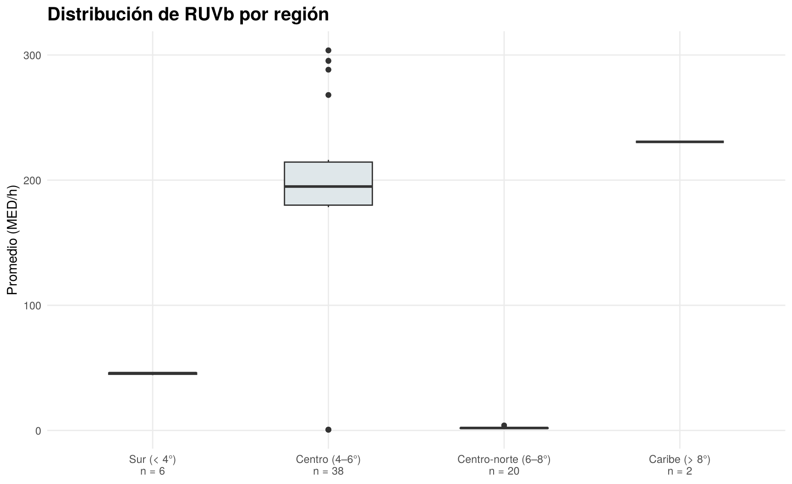
La RUVb tiene medianas muy distintas entre regiones, 2,0 en el centro-norte y 194,9 en el centro, que no tienen explicación física. La diferencia viene de las autoridades que reportan y de la escala que usa cada una, como se ve en el siguiente bloque.
# Autoridades que reportan RUVb cada año
tabla(ruvb %>% group_by(Año) %>%
summarise(Autoridades = paste(sort(unique(`Autoridad Ambiental`)), collapse = ", ")),
c("Año", "Autoridades que reportan"))| Año | Autoridades que reportan |
|---|---|
| 2011 | SDA |
| 2012 | SDA |
| 2013 | SDA |
| 2014 | SDA |
| 2017 | CDMB |
| 2018 | CDMB |
| 2019 | CDMB, CORPOBOYACA, EPA BARRANQUILLA |
| 2020 | CDMB, CORPOBOYACA, CRC |
| 2021 | CDMB, CORPOBOYACA, CRC |
| 2022 | CORPOBOYACA, CRC |
Hasta 2014 la RUVb solo la reportaba la SDA (Bogotá). Desde 2017 la reportan otras autoridades (CDMB, Corpoboyacá, CRC) con otra escala. Los dos periodos no se pueden comparar y cualquier correlación con RUVb sale afectada por este cambio.
2.9 Análisis de correlaciones
2.9.1 Preparación de los datos
# Preparar datos para análisis de correlación
datos_correlacion <- df %>% group_by(Año, Variable) %>% summarise(Promedio = mean(Promedio, na.rm = TRUE), .groups = "drop") %>% tidyr::pivot_wider(names_from = Variable, values_from = Promedio)Para comparar variables que se miden en estaciones distintas se usa el promedio nacional de cada año. Así cada variable queda con 14 puntos como máximo, y algunas con menos (TAire 6, HAire 7). Por eso se usa Spearman, que trabaja con rangos y es menos sensible a un año con un valor extremo que Pearson.
2.9.2 Matriz de correlaciones
# Matriz de correlación de Spearman entre contaminantes y variables meteorológicas
variables_eda <- c("PM10", "PM2.5", "NO2", "SO2", "O3", "TAire", "HAire", "VViento", "P", "PLiquida", "RGlobal", "RUVb")
matriz_correlacion <- datos_correlacion %>%
select(any_of(variables_eda)) %>%
cor(method = "spearman", use = "pairwise.complete.obs")# Mapa de calor de la correlación de Spearman
corrplot::corrplot(matriz_correlacion, method = "color", type = "upper", order = "hclust", addCoef.col = "black",
tl.col = "black", tl.srt = 45, number.cex = 0.7, diag = FALSE,
title = "Matriz de correlación de Spearman", mar = c(0, 0, 2, 0))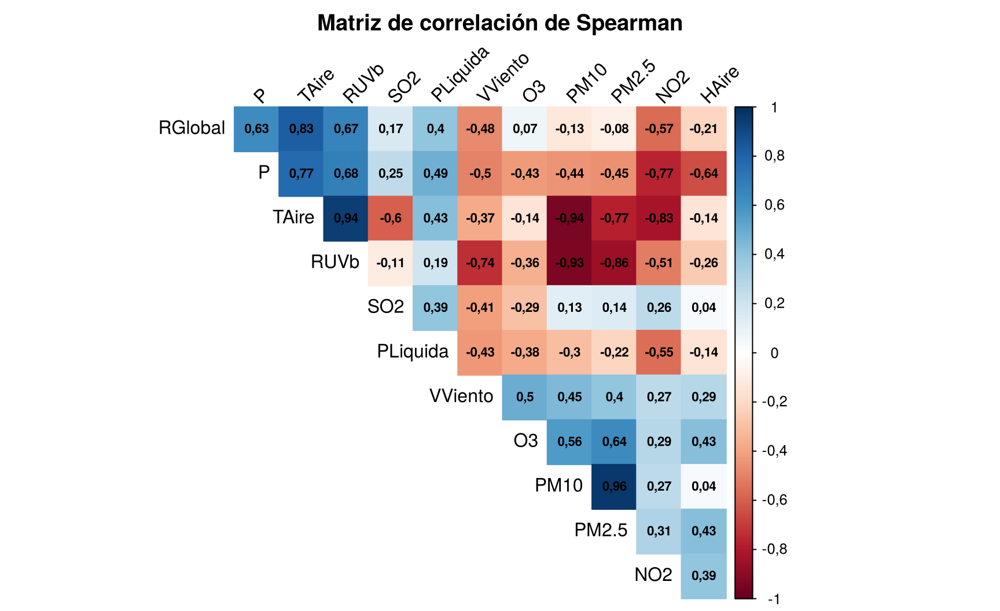
Con Spearman la matriz forma dos grupos. Uno con PM10, PM2.5, NO₂, O₃, viento y humedad, que se relacionan de forma positiva. Otro con radiación global, presión, temperatura y RUVb, que en general tiene relación negativa con los contaminantes.
- PM10 y PM2.5: ρ = 0,96 con 14 años. Es la relación más confiable. El PM2.5 es parte del PM10 y los dos vienen de las mismas fuentes.
- PM2.5 y O₃: ρ = 0,64 con 14 años, relación fuerte con la serie completa.
- TAire con PM10 (ρ = -0,94) y con NO₂ (ρ = -0,83): tienen sentido físico porque con más temperatura el aire se mezcla mejor, pero TAire solo tiene 6 años.
- RUVb con PM10 (-0,93) y con TAire (0,94), y NO₂ con P (-0,77): no se pueden usar por los problemas de RUVb y de la presión.
Una correlación alta no indica que una variable cause la otra.
2.9.3 Tabla de correlaciones y fuerza de asociación
# Correlaciones de Spearman con los años que tienen dato en todas las variables
completos <- datos_correlacion %>% select(where(is.numeric)) %>% na.omit()
m <- cor(completos, method = "spearman")
pares <- which(upper.tri(m), arr.ind = TRUE)
correlaciones_todas <- data.frame(Variable1 = rownames(m)[pares[, 1]], Variable2 = colnames(m)[pares[, 2]],
Correlacion = m[pares]) %>%
mutate(Fuerza = case_when(abs(Correlacion) >= 0.80 ~ "Muy fuerte", abs(Correlacion) >= 0.60 ~ "Fuerte",
abs(Correlacion) >= 0.40 ~ "Moderada", abs(Correlacion) >= 0.20 ~ "Débil",
TRUE ~ "Muy débil")) %>%
arrange(desc(abs(Correlacion)))
cat("Años con dato en todas las variables:", paste(completos$Año, collapse = ", "), "\n")## Años con dato en todas las variables: 2011, 2012, 2013, 2017, 2018, 2019cat("Pares con |ρ| ≥ 0,60:", sum(abs(correlaciones_todas$Correlacion) >= 0.6), "de", nrow(correlaciones_todas))## Pares con |ρ| ≥ 0,60: 103 de 210# Pares con correlación fuerte o muy fuerte entre las 12 variables principales y el año
fuertes <- correlaciones_todas %>%
filter(abs(Correlacion) >= 0.6, Variable1 %in% c("Año", variables_eda), Variable2 %in% c("Año", variables_eda))
color_corr <- function(x) ifelse(x >= 0.8, "#81C784", ifelse(x >= 0.6, "#A5D6A7", ifelse(x <= -0.8, "#E57373", "#EF9A9A")))
tabla(fuertes, c("Variable 1", "Variable 2", "ρ de Spearman", "Fuerza")) %>%
kableExtra::column_spec(3, background = color_corr(fuertes$Correlacion), color = "black")| Variable 1 | Variable 2 | ρ de Spearman | Fuerza |
|---|---|---|---|
| NO2 | RGlobal | -1,00 | Muy fuerte |
| Año | TAire | 1,00 | Muy fuerte |
| Año | PM10 | -0,94 | Muy fuerte |
| PM10 | TAire | -0,94 | Muy fuerte |
| PLiquida | VViento | -0,94 | Muy fuerte |
| Año | RUVb | 0,94 | Muy fuerte |
| PM10 | RUVb | -0,94 | Muy fuerte |
| RUVb | TAire | 0,94 | Muy fuerte |
| PM10 | PM2.5 | 0,89 | Muy fuerte |
| P | RUVb | 0,88 | Muy fuerte |
| PM2.5 | RUVb | -0,88 | Muy fuerte |
| Año | NO2 | -0,83 | Muy fuerte |
| P | PM2.5 | -0,83 | Muy fuerte |
| Año | RGlobal | 0,83 | Muy fuerte |
| NO2 | TAire | -0,83 | Muy fuerte |
| RGlobal | TAire | 0,83 | Muy fuerte |
| Año | P | 0,77 | Fuerte |
| NO2 | PM10 | 0,77 | Fuerte |
| Año | PM2.5 | -0,77 | Fuerte |
| PM10 | RGlobal | -0,77 | Fuerte |
| P | TAire | 0,77 | Fuerte |
| PM2.5 | TAire | -0,77 | Fuerte |
| NO2 | RUVb | -0,76 | Fuerte |
| RGlobal | RUVb | 0,76 | Fuerte |
| HAire | O3 | 0,71 | Fuerte |
| P | PM10 | -0,71 | Fuerte |
| O3 | PM2.5 | 0,71 | Fuerte |
| HAire | P | -0,66 | Fuerte |
| NO2 | PLiquida | -0,66 | Fuerte |
| PLiquida | RGlobal | 0,66 | Fuerte |
| NO2 | P | -0,60 | Fuerte |
| O3 | P | -0,60 | Fuerte |
| PLiquida | PM10 | -0,60 | Fuerte |
| NO2 | PM2.5 | 0,60 | Fuerte |
| PLiquida | PM2.5 | -0,60 | Fuerte |
| P | RGlobal | 0,60 | Fuerte |
| PM2.5 | RGlobal | -0,60 | Fuerte |
| Año | SO2 | -0,60 | Fuerte |
| SO2 | TAire | -0,60 | Fuerte |
| NO2 | VViento | 0,60 | Fuerte |
| RGlobal | VViento | -0,60 | Fuerte |
Esta tabla usa solo los años con dato en todas las variables: 2011, 2012, 2013, 2017, 2018, 2019. Se muestran los pares con |ρ| de 0,60 o más entre las 12 variables principales y el año. Con tan pocos años los valores cambian frente a la matriz. Por ejemplo, PM10 y PM2.5 da 0,89 aquí y 0,96 en la matriz.
Las filas con Año muestran la tendencia: PM10 (-0,94), NO₂ (-0,83) y PM2.5 (-0,77) bajan con el tiempo, y P (0,77) y RGlobal (0,83) suben. En la presión es otra vez el problema de unidades.
2.10 Análisis de valores atípicos
# Límites de Tukey para PM10 y PM2.5
outliers_pm <- data.frame(
Variable = c("PM10", "PM2.5"),
Q1 = c(quantile(pm10$Promedio, 0.25, na.rm = TRUE), quantile(pm25$Promedio, 0.25, na.rm = TRUE)),
Q3 = c(quantile(pm10$Promedio, 0.75, na.rm = TRUE), quantile(pm25$Promedio, 0.75, na.rm = TRUE))
) %>%
mutate(Rango_IQR = Q3 - Q1, Limite_inferior = Q1 - 1.5 * Rango_IQR, Limite_superior = Q3 + 1.5 * Rango_IQR)
tabla(outliers_pm, c("Variable", "Primer cuartil", "Tercer cuartil", "Rango IQR", "Límite inferior", "Límite superior"))| Variable | Primer cuartil | Tercer cuartil | Rango IQR | Límite inferior | Límite superior |
|---|---|---|---|---|---|
| PM10 | 27,0 | 44,8 | 17,8 | 0,30 | 71,50 |
| PM2.5 | 12,5 | 19,8 | 7,3 | 1,55 | 30,75 |
Para PM10 los valores atípicos son los que pasan de 71,50 µg/m³ y para PM2.5 los que pasan de 30,75 µg/m³. Los límites inferiores salen negativos o casi cero, así que no hay atípicos bajos.
2.10.1 Valores atípicos de PM10
# Diagrama de caja de PM10
ggplot(pm10, aes(x = "", y = Promedio)) +
geom_boxplot(width = 0.4, fill = "#dfe7ea") +
labs(title = "Distribución y valores atípicos de PM10", x = paste0("n = ", nrow(pm10)), y = "Concentración de PM10 (µg/m³)") +
tema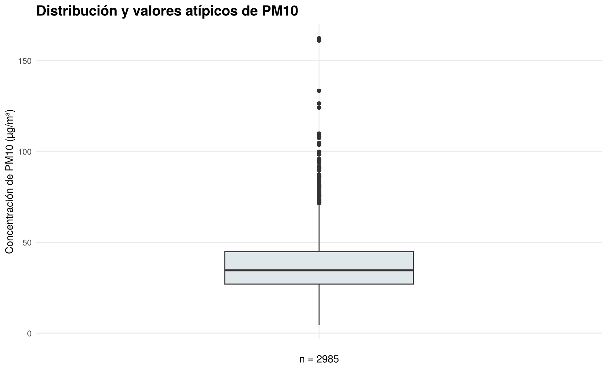
El PM10 tiene 91 atípicos, todos por encima de la caja. El más alto es la estación Bolivia de Bogotá, con 162 µg/m³ en 2012. También aparecen zonas industriales como Yumbo y Ráquira.
2.10.2 Valores atípicos de PM2.5
# Diagrama de caja de PM2.5
ggplot(pm25, aes(x = "", y = Promedio)) +
geom_boxplot(width = 0.4, fill = "#dfe7ea") +
labs(title = "Distribución y valores atípicos de PM2.5", x = paste0("n = ", nrow(pm25)), y = "Concentración de PM2.5 (µg/m³)") +
tema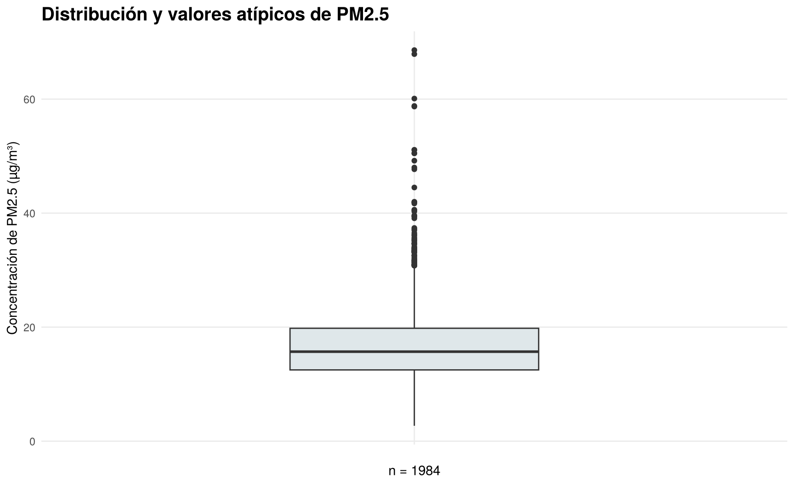
El PM2.5 tiene 74 atípicos, también solo valores altos, y se concentran en pocas estaciones.
2.10.3 Valores atípicos de variables meteorológicas
# Límites de Tukey en las variables meteorológicas
meteorologicas <- df %>% filter(Variable %in% c("TAire", "HAire", "VViento", "P", "PLiquida", "RGlobal", "RUVb"))
outliers_meteorologicas <- meteorologicas %>%
group_by(Variable) %>%
summarise(Q1 = quantile(Promedio, 0.25, na.rm = TRUE), Q3 = quantile(Promedio, 0.75, na.rm = TRUE), .groups = "drop") %>%
mutate(IQR = Q3 - Q1, Limite_inferior = Q1 - 1.5 * IQR, Limite_superior = Q3 + 1.5 * IQR)
tabla(outliers_meteorologicas, c("Variable", "Primer cuartil", "Tercer cuartil", "Rango IQR", "Límite inferior", "Límite superior"))| Variable | Primer cuartil | Tercer cuartil | Rango IQR | Límite inferior | Límite superior |
|---|---|---|---|---|---|
| HAire | 62,05 | 76,35 | 14,30 | 40,60 | 97,80 |
| P | 629,90 | 755,50 | 125,60 | 441,50 | 943,90 |
| PLiquida | 0,20 | 3,40 | 3,20 | -4,60 | 8,20 |
| RGlobal | 156,88 | 206,40 | 49,53 | 82,59 | 280,69 |
| RUVb | 1,90 | 205,85 | 203,95 | -304,03 | 511,78 |
| TAire | 20,60 | 25,00 | 4,40 | 14,00 | 31,60 |
| VViento | 0,90 | 1,70 | 0,80 | -0,30 | 2,90 |
# Boxplots de las variables meteorológicas
ggplot(meteorologicas, aes(x = Variable, y = Promedio)) +
geom_boxplot() +
labs(
title = "Distribución y valores atípicos de las variables meteorológicas",
x = "Variable meteorológica",
y = "Valor registrado"
) +
theme_minimal() +
theme(
plot.title = element_text(face = "bold", size = 16),
axis.text.x = element_text(angle = 45, hjust = 1)
)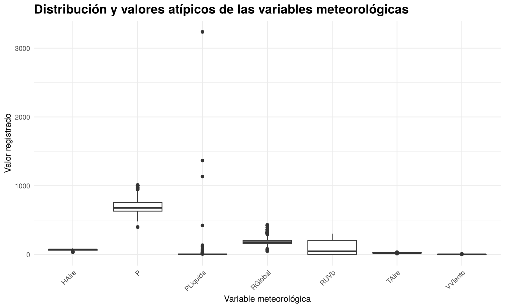
La presión tiene atípicos altos, que son los registros en hPa. La precipitación tiene valores muy lejos de la caja y el viento tiene pocos atípicos.
Los atípicos no se eliminan porque pueden ser episodios reales de contaminación. Solo se deben corregir los errores que se pueden demostrar, como la presión en hPa o la representatividad mayor a 100 %.
2.11 Resumen estadístico general
# Resumen estadístico general de las variables
variables_resumen <- df %>%
filter(Variable %in% c("PM10", "PM2.5", "SO2", "NO2", "O3", "TAire", "HAire", "VViento", "P",
"PLiquida", "RGlobal", "RUVb")) %>%
group_by(Variable) %>%
summarise(N = sum(!is.na(Promedio)), Mínimo = min(Promedio, na.rm = TRUE),
Q1 = quantile(Promedio, 0.25, na.rm = TRUE), Mediana = median(Promedio, na.rm = TRUE),
Media = mean(Promedio, na.rm = TRUE), Q3 = quantile(Promedio, 0.75, na.rm = TRUE),
Máximo = max(Promedio, na.rm = TRUE), .groups = "drop")
tabla(variables_resumen)| Variable | N | Mínimo | Q1 | Mediana | Media | Q3 | Máximo |
|---|---|---|---|---|---|---|---|
| HAire | 75 | 33,1 | 62,05 | 71,80 | 66,09 | 76,35 | 92,00 |
| NO2 | 644 | 0,5 | 16,50 | 26,00 | 26,46 | 35,60 | 65,60 |
| O3 | 827 | 2,0 | 19,80 | 25,70 | 26,15 | 31,80 | 65,80 |
| P | 673 | 399,1 | 629,90 | 677,60 | 701,68 | 755,50 | 1.010,40 |
| PLiquida | 927 | 0,1 | 0,20 | 1,40 | 9,77 | 3,40 | 3.236,70 |
| PM10 | 2.985 | 4,6 | 27,00 | 34,60 | 37,12 | 44,80 | 162,30 |
| PM2.5 | 1.984 | 2,7 | 12,50 | 15,70 | 16,84 | 19,80 | 68,60 |
| RGlobal | 600 | 48,3 | 156,88 | 178,45 | 185,64 | 206,40 | 431,30 |
| RUVb | 66 | 0,6 | 1,90 | 46,10 | 112,40 | 205,85 | 303,80 |
| SO2 | 1.066 | 0,1 | 3,40 | 6,00 | 9,43 | 11,00 | 91,71 |
| TAire | 73 | 13,4 | 20,60 | 22,30 | 22,62 | 25,00 | 33,50 |
| VViento | 1.254 | 0,1 | 0,90 | 1,20 | 1,37 | 1,70 | 10,20 |
La tabla junta en un solo lugar las estadísticas de las 12 variables principales.
2.12 Variables con problemas
Estas son las variables o columnas que no se pueden usar tal como vienen en el archivo.
| Variable | Problema | Causa probable | Decisión |
|---|---|---|---|
| P (presión) | 108 registros por encima de 800 mmHg, sobre todo en Cali, Villavicencio y Barranquilla | Valores en hPa etiquetados como mmHg | No usar sin convertir unidades |
| RUVb | Pasa de 0,6 (2011 a 2014) a valores de 130 a 180 desde 2019 | Cambio de autoridad que reporta y de escala | No es comparable, no se usa en correlaciones |
| TAire | 73 registros en 6 años y 24 % de representatividad | Pocas estaciones reportan sin altura | Usar TAire2 o TAire10 |
| HAire | 75 registros en 7 años y 27 % de representatividad | Pocas estaciones reportan sin altura | Usar HAire2 o HAire10 |
| DViento | El promedio aritmético de grados no tiene sentido físico | Variable circular | Requiere estadística circular |
| PLiquida | Media de 9,8 mm frente a mediana de 1,4 mm, máximo de 3.236,7 mm | Acumulados reportados como promedios | Usar la mediana |
| Representatividad Temporal | 12 registros por encima de 100 % (máximo 167 %) | Error de captura | Se documenta, no se corrige |
| Excedencias en registros de 1 h | Máximos de 3.608 µg/m³ de PM2.5 sin excedencias | No hay límite horario de PM2.5 en la norma | Usar solo registros de 24 h |
| Departamento y municipio | 49 nombres para 24 departamentos y 339 para 193 municipios | Mayúsculas, minúsculas y tildes | Normalizar los nombres |
2.13 Variable objetivo: excedencia diaria de PM2.5
El modelo va a responder si una estación tendrá en el año al menos un día con PM2.5 por encima del límite diario de la Resolución 2254 de 2017. Primero hay que revisar qué mide la columna Excedencias limite actual en cada tiempo de exposición.
# Verificar la columna de excedencias según el tiempo de exposición
pm25 <- pm25 %>% mutate(Excede = `Excedencias limite actual` > 0)
pm25 %>%
group_by(`Tiempo de exposición (horas)`) %>%
summarise(Registros = n(), Porcentaje_que_excede = mean(Excede) * 100,
Maximo_sin_excedencia = max(Máximo[!Excede]), .groups = "drop") %>%
tabla(c("Exposición (h)", "Registros", "% que excede", "Máximo sin excedencia (µg/m³)"), dec = 1)| Exposición (h) | Registros | % que excede | Máximo sin excedencia (µg/m³) |
|---|---|---|---|
| 1 | 840 | 77,7 | 3.608,5 |
| 24 | 1.144 | 47,9 | 50,2 |
En los registros de 24 horas ninguna estación sin excedencias pasa de 50,2 µg/m³, que coincide con el límite diario. En los de 1 hora hay estaciones con máximos de 3.608,5 µg/m³ que aparecen sin excedencias, porque la norma no tiene límite horario para PM2.5. Por eso la variable objetivo se arma solo con los registros de 24 horas.
# Construir la variable objetivo con los registros de 24 horas
pm25_24h <- pm25 %>%
filter(`Tiempo de exposición (horas)` == 24) %>%
mutate(Excede = as.integer(Excede))
cat("Registros:", nrow(pm25_24h), "| Estaciones:", n_distinct(pm25_24h$Estación), "\n")## Registros: 1144 | Estaciones: 383pm25_24h %>%
count(Excede, name = "Registros") %>%
mutate(Excede = ifelse(Excede == 1, "Sí", "No"), Porcentaje = Registros / sum(Registros) * 100) %>%
tabla(c("Excede", "Registros", "Porcentaje (%)"), dec = 1)| Excede | Registros | Porcentaje (%) |
|---|---|---|
| No | 596 | 52,1 |
| Sí | 548 | 47,9 |
La variable objetivo tiene 1.144 registros de 383 estaciones y el 47,9 % excede el límite. Las dos clases tienen casi el mismo tamaño, así que no hace falta sobremuestrear y se puede usar la exactitud junto con el AUC y el recall.
# Máximo diario de PM2.5 frente al límite de la norma
limite <- data.frame(Año = c(2010.5, 2018.5, 2024.5), Limite = c(50, 37, 37))
ggplot(pm25_24h, aes(x = Año, y = Máximo, color = factor(Excede, labels = c("No excede", "Excede")))) +
geom_jitter(width = 0.25, height = 0, size = 1.2, alpha = 0.6) +
geom_step(data = limite, aes(x = Año, y = Limite), inherit.aes = FALSE, linewidth = 0.8) +
scale_color_manual(values = c("No excede" = "grey60", "Excede" = "#c62828"), name = NULL) +
scale_x_continuous(breaks = 2011:2024) +
coord_cartesian(ylim = c(0, 150)) +
labs(title = "Máximo diario de PM2.5 y límite de la norma",
subtitle = "La línea negra es el límite diario de la Resolución 2254 de 2017",
x = "Año", y = "Máximo diario de PM2.5 (µg/m³)") +
tema + theme(legend.position = "top", axis.text.x = element_text(angle = 45, hjust = 1))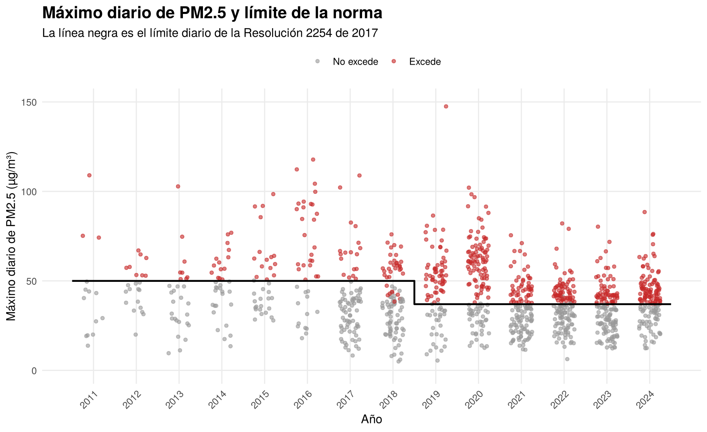
Los registros que exceden (rojo) quedan por encima de la línea del límite y los que no (gris) por debajo. El límite bajó de 50 a 37 µg/m³ a mediados de 2018, así que una misma concentración puede ser excedencia después de 2018 y no antes.
# Porcentaje de registros que exceden el límite por año
excedencia_anual <- pm25_24h %>%
group_by(Año) %>%
summarise(Tasa = mean(Excede) * 100, Registros = n(), .groups = "drop")
ggplot(excedencia_anual, aes(x = factor(Año), y = Tasa)) +
geom_col(fill = "#4a6572") +
geom_text(aes(label = paste0(Registros, "\n(", round(Tasa), " %)")), vjust = -0.2, size = 3, lineheight = 0.85) +
coord_cartesian(ylim = c(0, 100)) +
labs(title = "Porcentaje de registros que exceden el límite por año",
subtitle = "Arriba: número de registros. Entre paréntesis: porcentaje que excede",
x = "Año", y = "Registros que exceden (%)") +
tema + theme(axis.text.x = element_text(angle = 45, hjust = 1))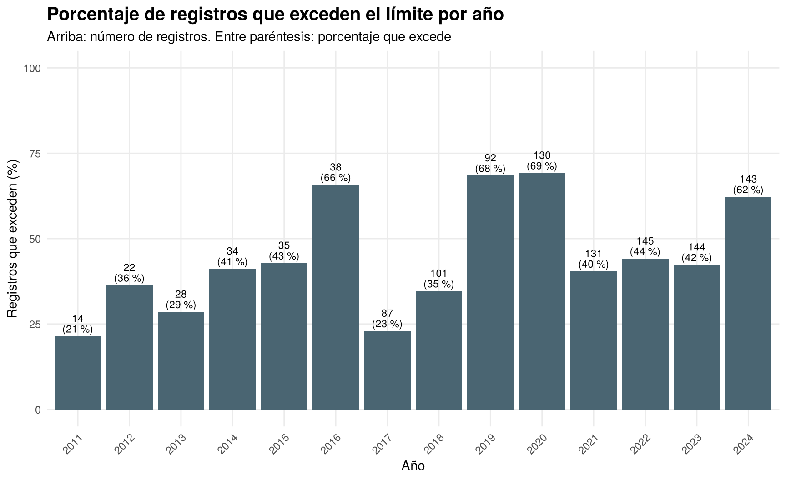
El porcentaje de excedencia no tiene una tendencia clara. Va de 21 % en 2011 a 69 % en 2020. Entre 2011 y 2016 hay pocos registros por año y en 2018 el límite se volvió más estricto, lo que complica la comparación. Aunque el promedio de PM2.5 bajó, los días con excedencia siguen siendo frecuentes.
# Excedencia según el tipo de estación
excedencia_tipo <- pm25_24h %>%
group_by(`Tipo de Estación`) %>%
summarise(Tasa = mean(Excede) * 100, Registros = n(), .groups = "drop")
tabla(excedencia_tipo, c("Tipo de estación", "% que excede", "Registros"), dec = 1)| Tipo de estación | % que excede | Registros |
|---|---|---|
| Fija | 52,4 | 987 |
| Indicativa | 19,7 | 157 |
Las estaciones fijas exceden mucho más (52 %) que las indicativas (20 %). Las fijas miden todo el año y suelen estar en zonas urbanas, mientras que las indicativas son campañas cortas con menos días para registrar una excedencia.
# Excedencia por departamento (nombres normalizados, al menos 20 registros)
excedencia_depto <- pm25_24h %>%
group_by(Departamento_norm) %>%
summarise(Tasa = mean(Excede) * 100, Registros = n(), .groups = "drop") %>%
filter(Registros >= 20) %>%
mutate(Departamento_norm = reorder(Departamento_norm, Tasa))
ggplot(excedencia_depto, aes(x = Departamento_norm, y = Tasa)) +
geom_col(fill = "#4a6572") +
geom_text(aes(label = paste0(Registros, "\n(", round(Tasa), " %)")), hjust = -0.1, size = 3, lineheight = 0.85) +
coord_flip() +
expand_limits(y = 100) +
labs(title = "Porcentaje de registros que exceden el límite de PM2.5",
subtitle = "Departamentos con al menos 20 registros. Arriba: registros. Entre paréntesis: % que excede",
x = "Departamento", y = "Registros que exceden (%)") +
tema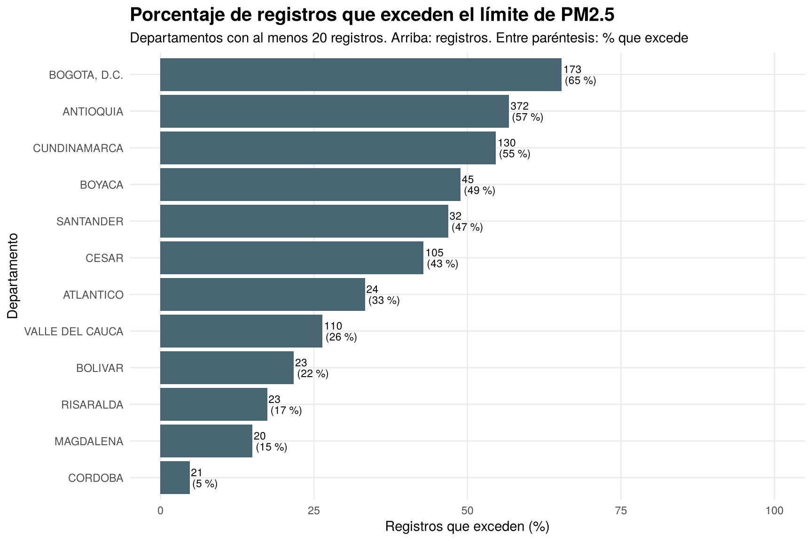
Bogotá (65 %), Antioquia (57 %) y Cundinamarca (55 %) exceden con frecuencia, mientras que Córdoba (5 %) y Magdalena (15 %) casi no. Las ciudades andinas están en valles o altiplanos donde hay inversiones térmicas y poco viento, y en la costa los vientos alisios ayudan a dispersar. La ubicación debería ser uno de los predictores más importantes.
# Estaciones de PM2.5 según el porcentaje de años con excedencia
estaciones_pm25 <- pm25_24h %>%
group_by(Estación) %>%
summarise(Latitud = mean(Latitud), Longitud = mean(Longitud),
Tasa = mean(Excede) * 100, Años = n(), .groups = "drop")
mapa_satelital(estaciones_pm25$Latitud, estaciones_pm25$Longitud, 7 + estaciones_pm25$Años * 1.6,
paste0(estaciones_pm25$Estación, ": excede en ", round(estaciones_pm25$Tasa), " % de ",
estaciones_pm25$Años, " años"),
"Estaciones de PM2.5 según el porcentaje de años con excedencia",
valor = estaciones_pm25$Tasa, titulo_barra = "% de años")Los puntos rojos se concentran en Bogotá y el Valle de Aburrá, y los azules en el Caribe y el suroccidente. El tamaño del punto indica cuántos años reportó la estación.
# Excedencia según los días medidos en el año
esfuerzo <- pm25_24h %>%
mutate(Cuartil_datos = paste0("Q", ntile(`No. de datos`, 4))) %>%
group_by(Cuartil_datos) %>%
summarise(Dias_medidos = median(`No. de datos`), Tasa = mean(Excede) * 100, Registros = n(), .groups = "drop")
tabla(esfuerzo, c("Cuartil de días medidos", "Mediana de días medidos", "% que excede", "Registros"), dec = 1)| Cuartil de días medidos | Mediana de días medidos | % que excede | Registros |
|---|---|---|---|
| Q1 | 41 | 21,0 | 286 |
| Q2 | 121 | 38,1 | 286 |
| Q3 | 304 | 53,5 | 286 |
| Q4 | 355 | 79,0 | 286 |
Las estaciones que midieron pocos días (Q1, mediana de 41 días) exceden en el 21 % de los casos y las que midieron casi todo el año (Q4) en el 79 %. Entre más días se mide, más fácil es captar al menos un día malo.
La variable objetivo depende de cuántos días se midió y no solo de la calidad del aire. El modelo tiene que incluir No. de datos o la representatividad como variable de control. Si no, va a confundir una estación que mide mucho con una estación contaminada.
# Promedio anual de PM2.5 según excedencia
conteo_exc <- table(pm25_24h$Excede)
ggplot(pm25_24h, aes(x = factor(Excede, labels = paste0(c("No excede", "Excede"), "\nn = ", conteo_exc)), y = Promedio)) +
geom_boxplot(width = 0.5, fill = "#dfe7ea") +
labs(title = "Promedio anual de PM2.5 según excedencia", x = NULL, y = "Promedio anual de PM2.5 (µg/m³)") +
tema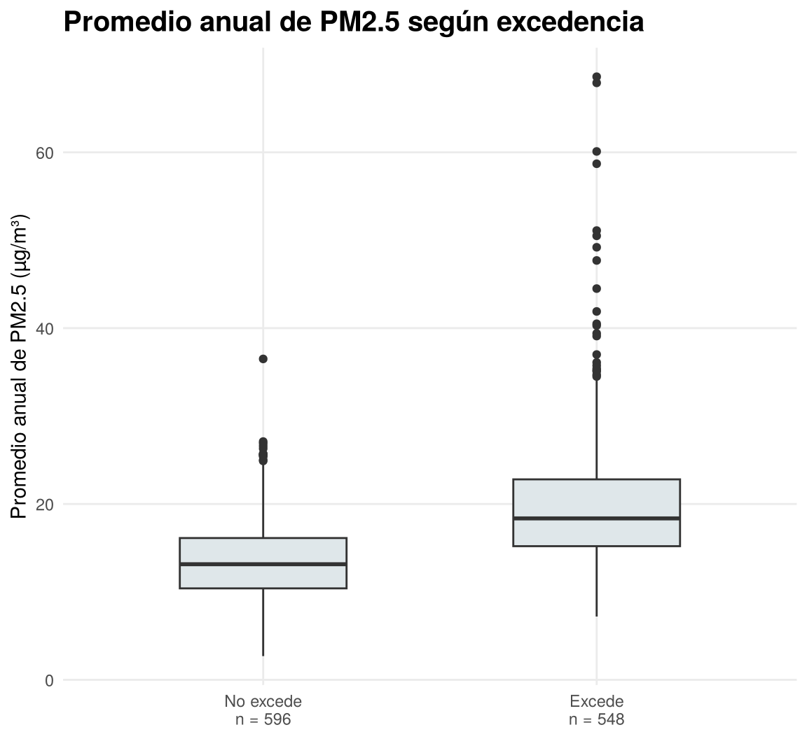
Las estaciones que exceden tienen un promedio anual más alto (mediana de 18,4 frente a 13,1 µg/m³), pero las cajas se cruzan. Hay estaciones con promedio bajo que igual tienen días críticos, así que el promedio solo no alcanza para saber si habrá excedencias.
El promedio, la mediana, el percentil 98, el máximo, los días de excedencia y el porcentaje de excedencias del PM2.5 se calculan con las mismas mediciones que definen la excedencia. Si se usan como predictores el modelo hace trampa (fuga de información o data leakage).
Predictores candidatos para el modelo
| Variable | Uso | Razón |
|---|---|---|
| Latitud, longitud, departamento | Incluir | Diferencia clara entre la región andina y el Caribe |
| Tipo de estación | Incluir | Las fijas exceden mucho más que las indicativas |
| No. de datos, representatividad | Incluir como control | Controlan cuántos días se midió |
| Año | Incluir | Recoge el cambio de límite en 2018 y los cambios de la red |
| Autoridad ambiental | Evaluar | Puede repetir la información de ubicación |
| Promedio, mediana, P98, máximo y días de excedencia de PM2.5 | Excluir | Fuga de información |
| Meteorología de la misma estación | Evaluar | Solo cerca del 30 % de las estaciones la mide |
Con estos predictores se entrena el modelo en el capítulo 3.